허미스 에이전트는 무엇이 다른가요
이 영상은 허미스 에이전트를 처음 쓰는 사람을 위한 1시간 43분짜리 따라 하기 강의예요. 발표자 Matt는 매일 허미스를 쓰고, 자기 에이전트에 20개 넘는 예약 작업을 맡겨 두고 있다고 해요. 그가 말하는 핵심은 하나예요. 설치는 쉬운 부분이고, 어려운 건 그다음에 무엇을 시키느냐예요. 허미스를 채팅봇처럼 대하면 또 하나의 채팅봇일 뿐이고, 배우는 비서로 대할 때 쓸모가 생긴다고 해요.
그래서 영상은 여섯 단계 사다리로 짜여 있어요. 아래 그림은 단계마다 무엇을 하는지 영상의 순서대로 옮긴 거예요. 이 문서의 섹션도 이 사다리를 따라가요.
ChatGPT·Claude와 무엇이 다른가요
허미스 에이전트는 Nous Research가 만든 무료 오픈소스 AI 에이전트예요. 돈은 두 군데에만 들어요. 생각에 쓰는 모델 사용료, 그리고 에이전트가 사는 서버 대여료예요. 발표자는 정직하게 인정하는 것부터 시작해요. ChatGPT와 Claude도 이제 예약 실행을 하고, 나를 기억하고, 메일을 읽고 대신 보내요. 그것만 원한다면 이미 가진 셈이에요. 대신 그쪽에서 살 수 없는 세 가지가 있다고 해요.
| 구분 | ChatGPT·Claude | 허미스 에이전트 |
|---|---|---|
| 모델 선택 | 자기 회사 모델만 써요 | 어느 회사 모델이든 연결해요. 지루한 일엔 싼 모델, 어려운 일엔 강한 모델을 한 에이전트 안에서 섞어요 |
| 소유 | 빌려 쓰는 서비스라 주간 한도가 있고, 회사가 기능을 뺄 수 있어요 | 내 서버에서 도는 무료 소프트웨어라 누가 속도를 줄이거나 기능을 끌 수 없어요 |
| 사는 곳 | 자기 앱 안에서만 대화해요 | 자기 텔레그램·WhatsApp·Slack 계정이 생겨서 내가 매일 쓰는 앱으로 말을 걸어요 |
| 일을 나누는 방식 | 일마다 프로젝트를 만들고, 아는 내용이 그 프로젝트 안에 갇혀요 | 에이전트 하나가 내 세계 전체를 배우고, 배운 걸 스킬로 적어 다음에 다시 써요 |
영상 화면은 첫 번째 차이를 그림으로 보여 줘요. 왼쪽 목록에 Claude Opus 5, GPT-6 Astra, Gemini, DeepSeek V4 Flash가 한 에이전트 안에 나란히 있어요. 오른쪽은 가벼운 일엔 DeepSeek V4 Flash($), 도구를 많이 쓰는 어려운 일엔 Claude Opus 5($$$)를 붙이는 장면이에요.
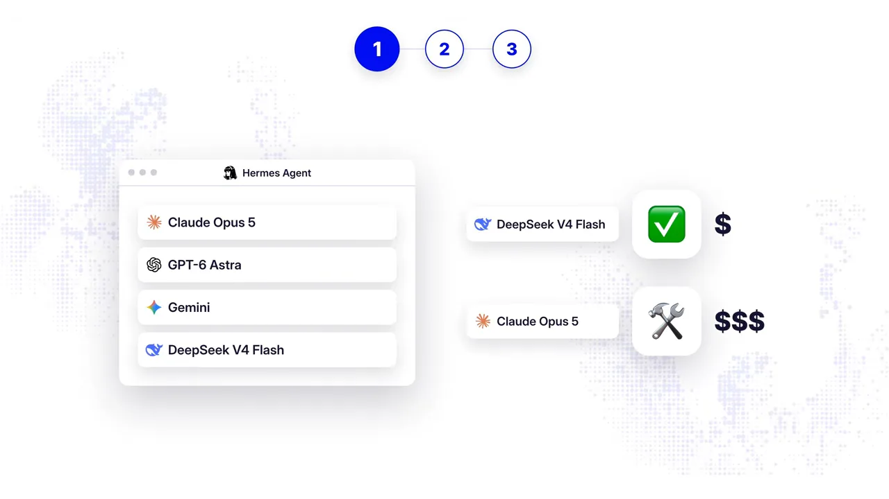
OpenClaw를 써 봤다면 같은 종류의 도구라고 보면 돼요. 늘 켜져 있는 개인 에이전트예요. 옮겨 올 때 손으로 할 건 없고, 설치를 마친 뒤 에이전트에게 OpenClaw 설정을 가져오라고 하면 과정을 안내해 줘요. 발표자는 한 가지를 부탁해요. 영상 속 예시를 그대로 따라 하지 말고 내 일, 내 공부, 내 집안일로 바꿔서 해 보라는 거예요. 내가 신경 쓰는 일로 해야 훨씬 빨리 배운다고 해요.
레벨 1 — 서버를 빌리고 모델을 연결해요
에이전트가 살 컴퓨터는 세 가지 조건을 갖춰야 해요. 첫째, 늘 깨어 있어야 해요. 예약 작업도, 감시도, 나에게 보내는 메시지도 새벽 3시에 컴퓨터가 켜져 있어야 돌아가요. 가방 속 노트북은 꺼져 있죠. 둘째, 내 것과 떨어져 있어야 해요. 에이전트는 명령을 실행하고, 프로그램을 깔고, 파일을 쓰고 지워요. 배우는 동안엔 개인 사진, 비밀번호, 민감한 업무 문서, 은행에 로그인된 브라우저가 없는 곳에서 해야 해요. 셋째, 어디서든 닿아야 해요. 휴대폰, 노트북, 태블릿이 모두 같은 에이전트로 들어가는 문이 돼야 해요.
아래 화면이 둘째 조건을 그린 거예요. 왼쪽 노트북에는 금지 표시가 붙었고, 그 아래 사람·공구·문서·은행 아이콘이 노트북에 함께 있는 내 것들이에요. 오른쪽 클라우드 서버에는 체크 표시가 붙었어요.
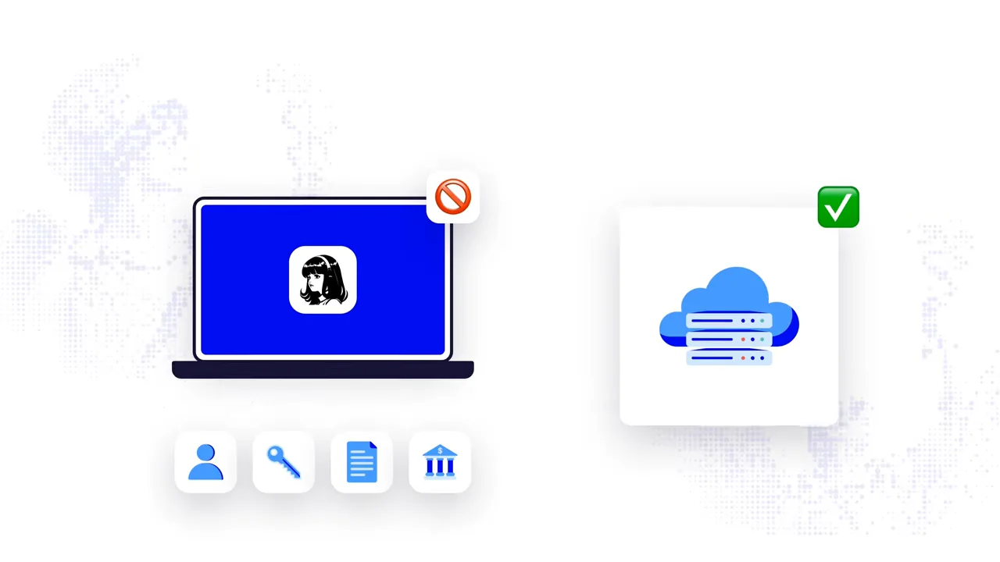
그래서 고른 게 VPS예요. 데이터센터에서 늘 켜져 있고 나만 로그인하는 컴퓨터예요. 가장 작은 건 한 달에 몇 달러면 돼요. 내 컴퓨터에 깔 수도 있지만, 그러면 그 컴퓨터가 켜져 있을 때만 일하고, 내 모든 파일 바로 옆에서 명령을 실행하게 돼요. 그래서 첫 에이전트는 서버를 빌리라고 해요.
원클릭 템플릿으로 설치하기
서버는 여러 회사에서 빌릴 수 있지만, 대부분은 터미널에서 직접 설치해야 해요. 발표자는 이 부분을 건너뛰려고 Hostinger의 원클릭 Hermes 템플릿을 써요. 템플릿이 허미스 설치, 보안 웹 주소, 로그인 페이지, 백업, 원클릭 업데이트, 재시작 버튼까지 붙여 줘요. 요금제는 가장 작은 KVM(Kernel-based Virtual Machine) 1이면 에이전트 하나를 넉넉히 돌린다고 해요. 나중에 부족하면 재설치 없이 올리면 돼요. 장바구니에 미리 체크된 'Ready to use AI' 부가 서비스는 필요 없는 다른 AI 서비스라 해제하라고 해요. 이 영상은 모델을 따로 연결하거든요.
결제가 끝나면 Hermes Agent 설정 폼이 떠요. 위의 ADMIN_USERNAME과 ADMIN_PASSWORD가 대시보드에 들어갈 열쇠예요. 눈 아이콘을 눌러 비밀번호를 보고, 복사해서 비밀번호 관리자에 저장해요. 메모장처럼 남이 찾을 수 있는 곳은 안 돼요. 아래의 Nexos, Oxylabs 키 칸은 비워 두고 Deploy를 눌러요.
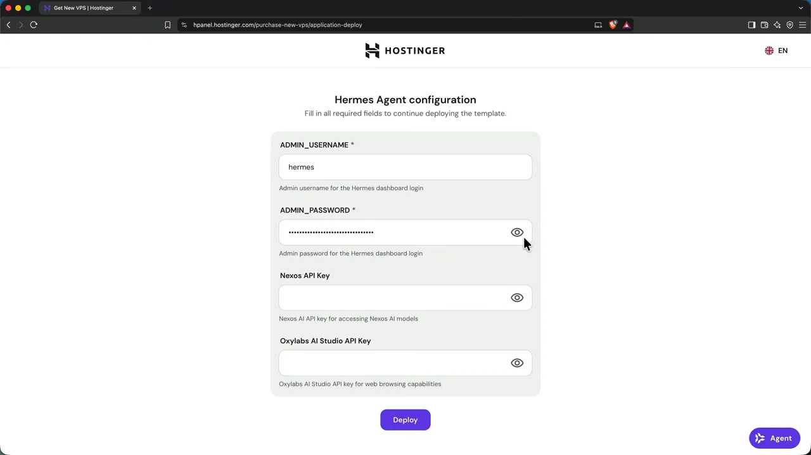
가끔 이 폼 없이 빈 서버 대시보드로 떨어지는 문제가 있어요. 그럴 땐 화면 아래 파란 띠에 적힌 경로를 따라가요. VPS → Manage → Docker Manager → Catalog로 가서 hermes를 검색하면 Hermes Agent, Hermes WebUI, Hermes Workspace 세 카드가 떠요. 이 중 Hermes Agent의 Select를 누르면 같은 설정 폼이 열려요.
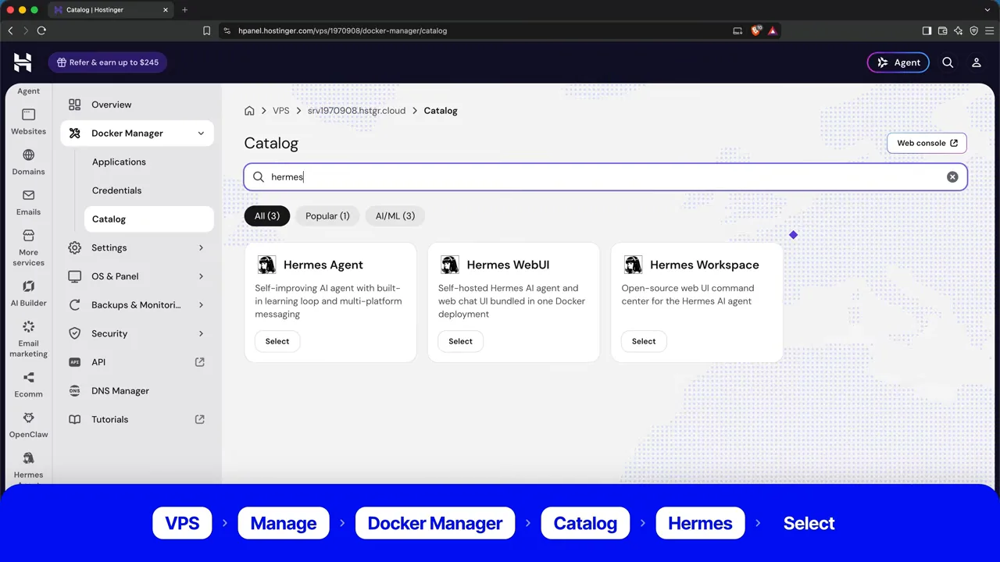
대시보드 둘러보기
Docker Manager에서 Hermes Agent의 Open 링크를 누르면 로그인 페이지가 나와요. 이 주소를 북마크하고 저장해 둔 아이디로 들어가면 에이전트의 제어실이에요. 왼쪽 메뉴의 Sessions는 모든 기기에서 나눈 모든 대화이고, 이 대화들은 기억 하나를 공유해요. Models는 생각할 모델을 고르는 곳, Cron은 내가 자는 동안 일하게 하는 일정표, Skills는 절차 모음이에요. 아래로 내리면 추가 에이전트를 만드는 Profiles와, Plugins 아래의 Kanban(레벨 6) 보드가 있어요.
채팅을 열어 "hello"를 쳐도 아무 일도 안 일어나요. 아래 화면 맨 아래 줄의 오류가 이유예요. "No inference provider configured", 즉 모델 제공자가 설정되지 않았다는 뜻이에요. 그 위의 Setup Required 상자도 /model로 제공자와 모델을 정하라고 안내해요.
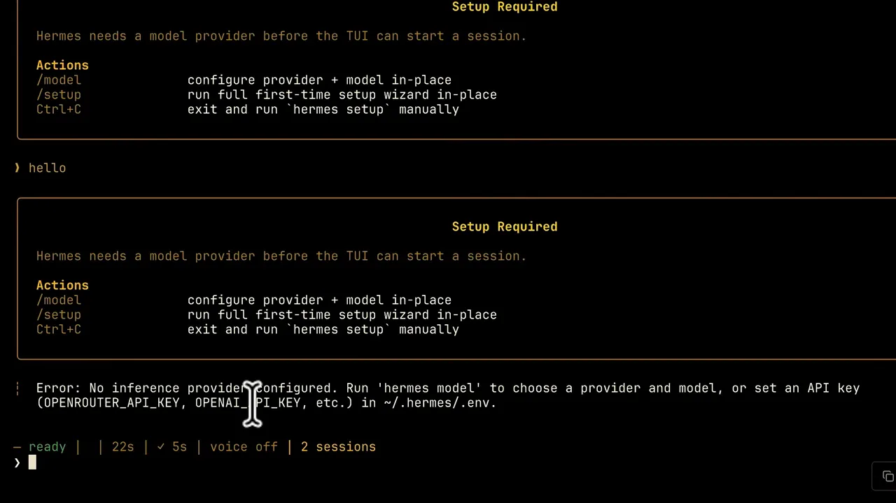
발표자는 여기서 부품 두 개를 구분해요. 아래 그림에서 가운데 창의 빨간 'No model' 표시가 모델 제공자가 없는 상태예요. 오른쪽 Account 카드가 지능을 공급하는 계정이고요. 왼쪽 메뉴에서 선택된 Gateway는 휴대폰 같은 바깥 세상과 메시지를 주고받는 부분이에요. 모델은 지금 고치고, 게이트웨이는 레벨 2에서 연결해요.
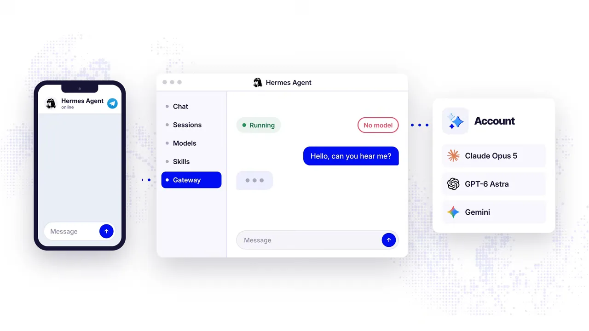
Nous Portal로 모델 연결하기
모델 계정으로는 허미스를 만든 Nous Research의 Nous Portal을 써요. 허미스에 내장돼 있어서 키를 복사할 필요 없이 로그인만 하면 연결돼요. 계정 하나로 주요 AI 회사의 200개 넘는 모델을 쓰고, 웹 검색·웹페이지 읽기·이미지 생성·브라우징·음성 같은 도구도 함께 받아요. 아래 요금 화면에서 파란 'PLUS' 카드가 영상이 고른 등급이에요. 월 20달러에 22달러어치 크레딧이 들어오고, 안 쓴 크레딧은 다음 달로 넘어가요.
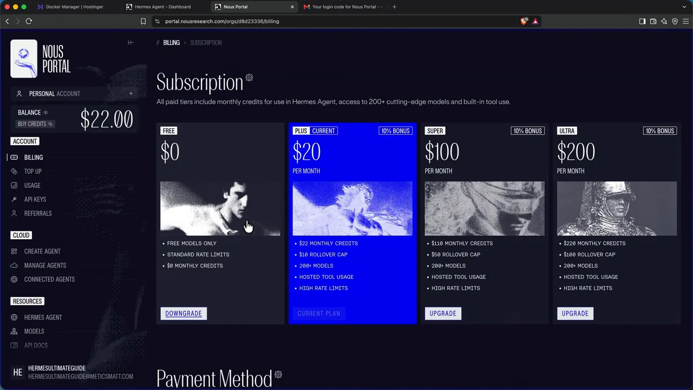
대시보드로 돌아와 왼쪽 메뉴의 Keys를 열어요. 'PROVIDER LOGINS (OAUTH)' 목록의 첫 줄이 Nous Portal이에요. Login을 누르고 새 창에서 Connect를 누르면, 아래처럼 Nous Portal 줄에 Disconnect 버튼이 생겨요. 연결됐다는 뜻이에요. 그 아래에는 ChatGPT·Codex 구독, Qwen, MiniMax, xAI Grok, GitHub Copilot, Anthropic API(Application Programming Interface) 키 같은 다른 연결 방법이 줄지어 있어요.
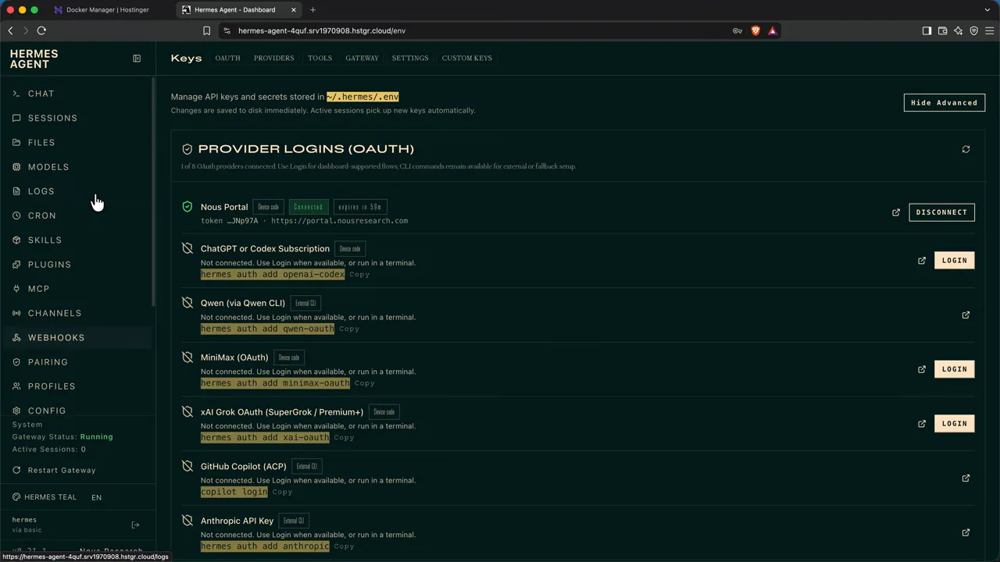
이제 Models에서 메인 모델 옆 Change를 눌러요. 처음엔 메시지를 많이 보내며 배우니 빠르고 싼 모델로 시작하라고 해요. 아래 창의 검색칸에 "deep"을 치면 deepseek-v4-pro, deepseek-v4-pro-0813, deepseek-v4-flash-0731 세 개가 나오고, 체크된 맨 아래 Flash가 영상의 선택이에요. 숫자는 신경 쓰지 말고 볼 때의 최신 Flash를 고르면 돼요. DeepSeek를 고른 이유는 도구를 잘 쓰고, 메시지 하나에 1센트도 안 들기 때문이에요.
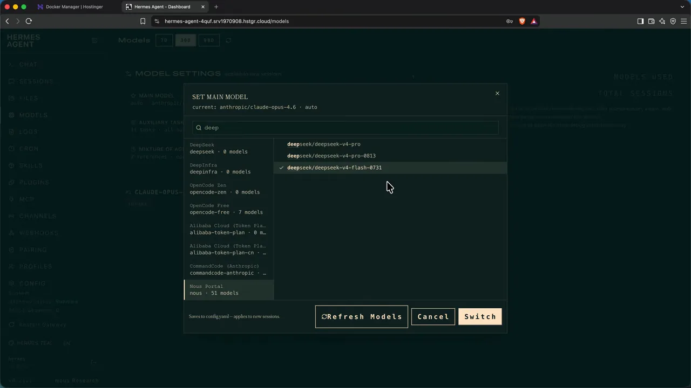
다시 채팅에 "Hello"를 보내면 이번엔 답이 와요. 이어서 "가진 도구가 뭐야?"라고 물으면 아래처럼 목록을 줘요. 실제 Chromium 브라우저 조작, 터미널 명령, 파일 읽고 쓰기, 코드 실행, 웹 검색, 병렬 서브에이전트에게 일 나누기, 세션을 넘는 기억, 크론 예약, 음성·이미지 같은 기타 도구예요.
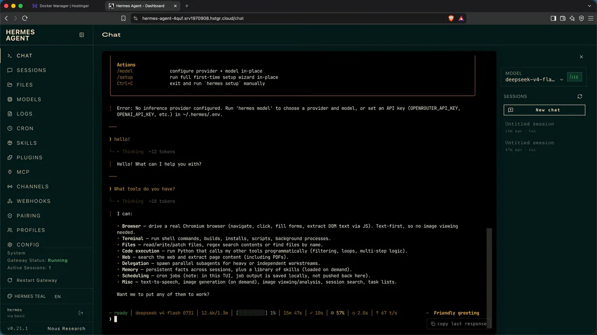
이미 다른 AI에 돈을 내고 있다면 길이 두 개 더 있어요. 아래 그림의 OpenRouter처럼 쓴 만큼 크레딧을 사는 서비스를 쓰거나, ChatGPT 구독으로 로그인하는 방법이에요. 다만 에이전트는 구독 한도를 빨리 써 버려요. 오른쪽 Claude Pro에 빨간 X가 그어진 건, Anthropic 약관상 Claude 구독은 자사 앱 전용이라 이 방법은 안내하지 않는다는 뜻이에요. Nous Portal에서 쓴 만큼 내면 Claude 모델도 다 쓸 수 있어요.
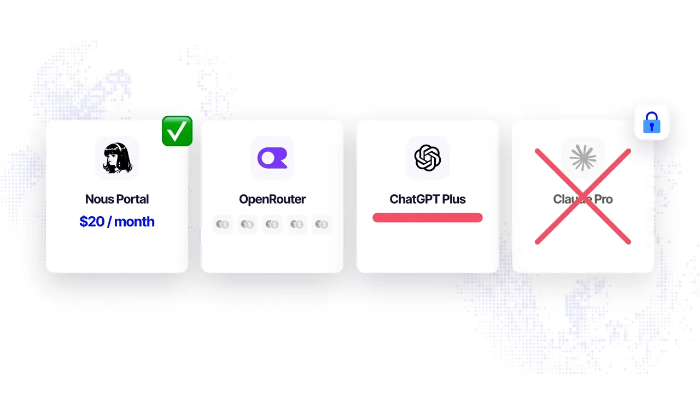
레벨 2 — 텔레그램과 데스크톱 앱으로 어디서나
지금 에이전트는 브라우저 탭 안에만 살아요. 레벨 2에서는 대시보드 근처에 없을 때도 닿도록 에이전트에게 자기 텔레그램 계정을 만들어 줘요. 텔레그램을 고른 건 QR(Quick Response) 코드 한 번 찍는 것으로 끝나 설정이 가장 쉽기 때문이에요. 답이 빠르고, 파일·음성 메모·사진을 한 스레드에서 보낼 수 있어요. 허미스는 Discord, Slack, WhatsApp을 포함해 20개가 넘는 다른 플랫폼도 지원하고, 같은 페이지에서 나중에 더할 수 있어요.
텔레그램 봇 연결하기
대시보드 왼쪽 Channels를 열면 아래 화면이에요. 맨 위 노란 경고줄이 "변경 사항이 저장됐으니 게이트웨이를 재시작하라"고 알려요. 그 아래 Telegram 칸을 토글로 켜고, 오른쪽 위 'RESTART NOW'를 누르는 장면이에요. 재시작은 몇 분 걸리고, 오래 안 바뀌면 브라우저를 새로 고치면 돼요.
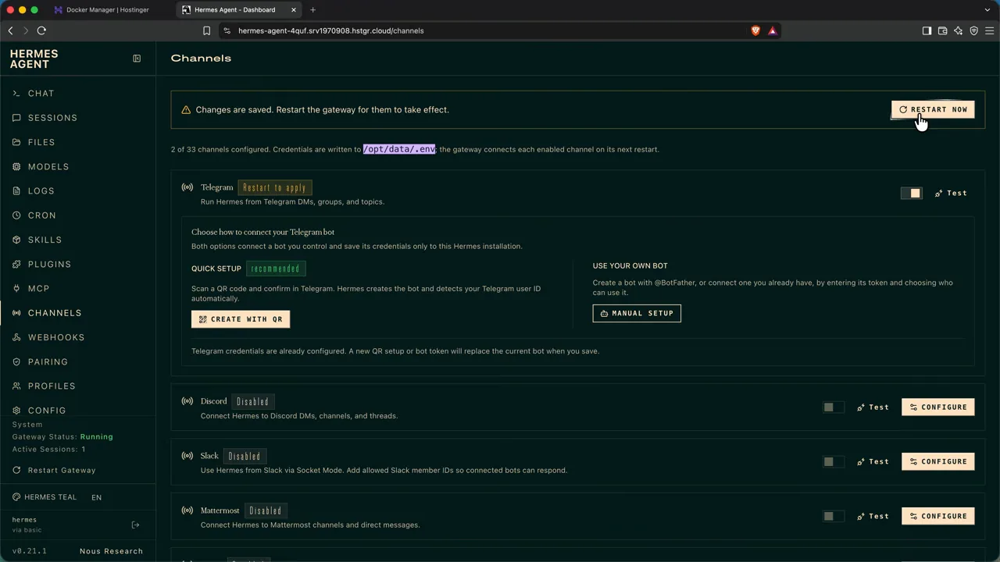
휴대폰 카메라로 QR 코드를 찍으면 NousHostedHermesBot과의 대화가 열려요. Create bot을 누르면 아래 오른쪽 휴대폰처럼 "Hermes Agent is ready!" 카드가 떠요. 다만 아직 완전히 연결된 건 아니에요. 뒤로 가서 NousHostedHermesBot 대화로 돌아가, "Connect this bot" 버튼을 눌러야 해요.
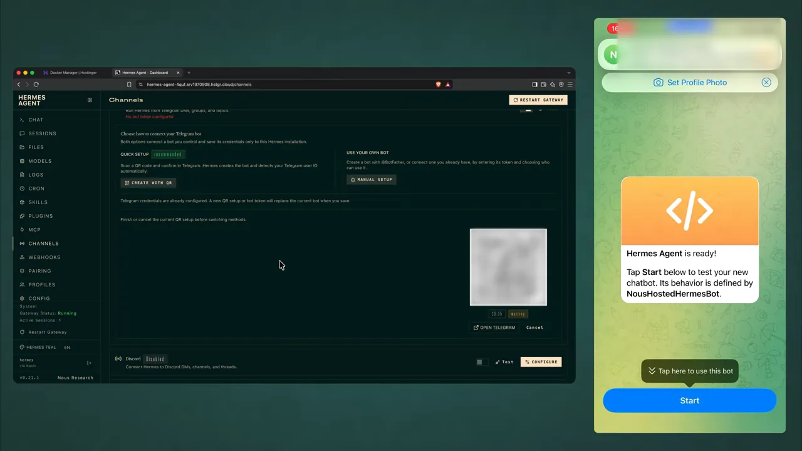
이제 텔레그램에서 @hermes_로 시작하는 봇 이름을 눌러 Start를 누르고, 실제로 메시지를 하나 보내야 대화가 시작돼요. 첫 답과 함께 홈 채널이 없다는 안내가 와요. 아래 화면처럼 /sethome을 누르면 초록 체크와 함께 "Home channel set for Matt"가 뜨고, 크론 작업과 다른 플랫폼에서 온 메시지가 이 채팅으로 배달된다고 알려 줘요.
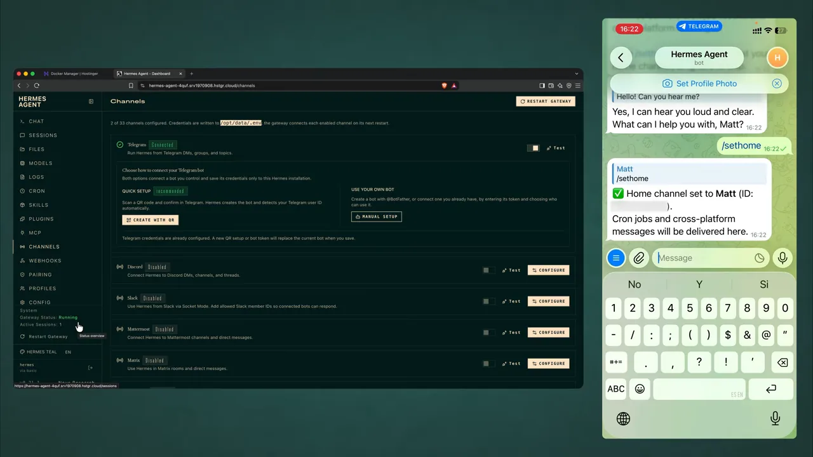
안전 이야기도 짚어요. 이 흐름으로 내 텔레그램 계정이 허용 목록에 들어갔어요. 다른 사람이 봇을 찾아 말을 걸어도 아무 답도 못 받아요. 그리고 텔레그램 봇 대화는 종단간 암호화가 아니라서 비밀번호나 금융 정보는 보내지 말라고 해요.
기억은 하나, 스레드는 여러 개
많은 사람이 처음에 헷갈리는 부분이에요. 휴대폰에서 나눈 대화와 대시보드에서 나눈 대화는 서로 다른 스레드예요. 발표자는 이메일에 빗대요. 같은 비서와 이메일 스레드를 다섯 개 주고받을 수 있죠. 한 스레드에서 한 말이 다른 스레드에 저절로 나타나진 않지만, 비서의 받은편지함엔 다섯 개가 다 있어서 언제든 찾아봐요. 아래 화면은 이걸 그린 거예요. 왼쪽 Threads 목록의 Telegram, Dashboard, Desktop app, WhatsApp, Slack이 모두 점선으로 오른쪽 에이전트 하나에 이어져요.

앱에서 시작한 대화를 휴대폰에서 이어 가려면 /handoff로 스레드를 넘겨요. 영상은 대시보드 채팅에서 영화 '대부' 줄거리를 물은 뒤, /handoff 다음에 Telegram을 골라요. 그러면 아래처럼 텔레그램에 "Working here — Telegram, same session"과 함께 지금까지 나눈 내용 요약이 와요. 넘기기가 말썽이면 텔레그램에서 "아까 하던 거 이어 줘"라고만 해도 에이전트가 자기 기록을 검색해요.
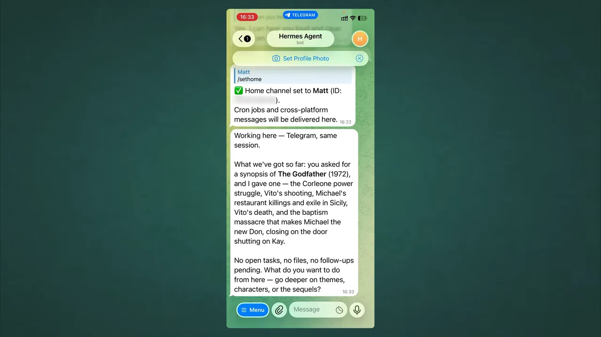
슬래시 명령은 앱, 대시보드, 텔레그램 어디서나 똑같이 통해요. 특히 쓸모 있는 건 두 개예요.
/new— 새 세션을 열어요. 계속 같은 텔레그램 대화에 이어 쓰면 매 메시지마다 모델이 긴 맥락을 받아 토큰을 태워요. 주제가 바뀌면 새 세션을 여는 게 원칙이에요./model— 쓸 수 있는 모델 사이를 바꿔요. Nous Portal을 눌러 제공되는 모델을 고를 수 있어요.
봇이 조용해지면 세 가지를 봐요
발표자는 순서를 정해 줘요. 첫째, 모델 제공자의 크레딧과 속도 제한이에요. 가장 흔한 원인이고, 허미스가 마지막 메시지에서 알려 주는 편이에요. 둘째, 게이트웨이예요. 상태가 Running인지 보고 이상하면 재시작해요. 조용한 봇은 이걸로 거의 다 고쳐진다고 해요. 셋째, 로그예요. 아래 화면 오른쪽 아래 체크리스트가 이 순서를 정리한 거예요. 뒤쪽 화면은 Logs 페이지의 AGENT.LOG이고, 위쪽 필터로 debug, info, warning, error만 골라 볼 수 있어요.
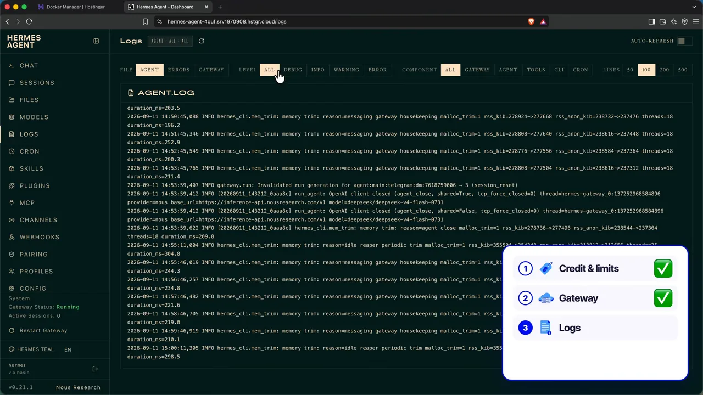
데스크톱 앱을 서버에 붙이기
브라우저 대시보드는 어디서든 되는 제어실이지만 매번 탭을 찾아야 해요. 매일 쓰기엔 데스크톱 앱이 좋아요. ChatGPT나 Claude 데스크톱 앱처럼 생겼고, 대화가 사이드바에 남고, 파일을 끌어다 놓고, 말로 묻고 답을 들을 수 있어요. 앱은 hermes-agent.nousresearch.com에서 운영체제에 맞게 받아요.
여기서 중요한 함정이 하나 있어요. 설치 후 "Let's get you set up" 화면이 모델 제공자를 고르라고 하는데, 건너뛰어야 해요. 고르면 이 컴퓨터에 두 번째 에이전트가 생기거든요. "I'll choose a provider later"를 누르고 설정(Command+,)을 열어요. 아래 화면의 Gateway Connection에서 연결 방식은 네 가지예요. Local gateway, Hermes Cloud, Remote gateway, Connect via SSH(Secure Shell) 중 가운데 테두리가 쳐진 Remote gateway를 골라요.
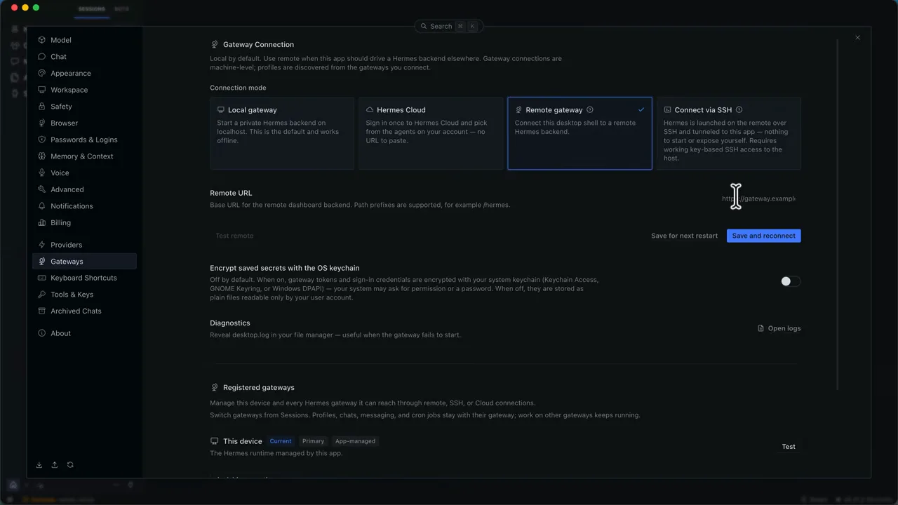
잘 붙었는지는 앱에서 "텔레그램에서 내가 처음 보낸 메시지가 뭐였어?"라고 물어 확인해요. "Backend out of date" 경고가 뜰 수 있는데, 앱이 서버보다 새것일 때 나오는 거라 닫아도 돼요. 답은 "Hello! Can you hear me?"였어요. 이제 에이전트 하나에 문이 셋이에요. 웹 대시보드, 텔레그램, 데스크톱 앱이고, 모두 같은 기억을 써요.
데스크톱 앱에서 발표자가 특히 아끼는 건 HUD(Heads-Up Display) 모드예요. Command+Shift+H를 누르면 아래처럼 작은 막대가 지금 보는 화면 위에 떠요. 막대의 위치가 그 아래에 있는 게 무엇인지 허미스에게 알려 줘서, "이거", "여기"라고 하면 지금 보는 페이지나 앱을 뜻하게 돼요. 아래 화면은 앞서 한 질문의 답이 바탕화면 위 막대에 그대로 뜬 모습이에요.

입력창 옆에는 음성 버튼이 넷 있어요. 마이크 버튼은 받아쓰기, 스피커 버튼은 답을 소리 내 읽기, 호출어 버튼은 "Hey, Hermes"라고 부르면 듣기 시작하게 하고, 마지막 파형 아이콘은 말로 주고받는 음성 대화예요. 레벨 2의 숙제는 컴퓨터에서 떨어진 곳에서 휴대폰으로 말을 건 뒤, 같은 스레드를 앱에서 이어 받는 거예요.
레벨 3 — 내 파일과 계정에서 일 시키기
ChatGPT, Claude, Gemini도 웹을 검색하고, 파일을 읽고, 계정에 연결해요. 그러면 허미스는 무엇이 다를까요. 발표자는 두 가지를 꼽아요. 하나는 일이 일어나는 곳이에요. 에이전트에게 자기 컴퓨터가 있어서 만든 결과물이 거기 남아요. 다음 주에 다시 집어 들 수 있고, 다음 레벨의 예약 작업이 결과를 쓸 곳도 생겨요. 다른 하나는 생태계 전체가 스스로 일하고, 돌 때마다 나아지게 짜여 있다는 점이에요.
조사 한 번, 파일 만들고 지우기 한 번
먼저 데스크톱 앱에서 "스탠딩 책상 상위 세 개를 조사해서 링크와 함께 한 문단으로 비교해 줘"라고 시켜요. 에이전트는 스킬을 불러오고, 도구로 뉴욕타임스 같은 페이지를 읽고, 뒤에서 코드를 돌려 링크 목록이 아니라 답을 줘요. 출처도 아래에 달아요.
다음은 먼저 물어봐야 할 일이에요. 테스트 파일 세 개를 만들게 하면 아래 화면처럼 서버의 /opt/data 폴더에 텍스트, 마크다운, JSON(JavaScript Object Notation) 파일을 하나씩 써요. 표의 Path 열이 그 경로예요. 이어서 "방금 만든 파일 세 개 지워"라고 하면 지워요.
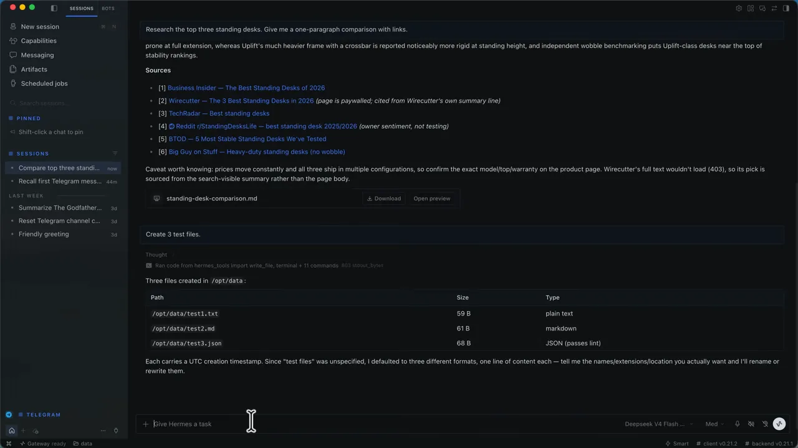
허락을 구할 때 데스크톱 앱엔 Run 버튼이, 텔레그램엔 모델 선택 창과 비슷한 팝업이 떠요. 그 세션 동안 허용할지, 이번 한 번만 허용할지 고를 수 있어요. 조사처럼 안전한 일은 묻지 않지만, 삭제나 위험한 코드 실행은 내가 "예"라고 하기 전엔 아무 일도 안 일어나요.
발표자는 권한을 '점진적 신뢰'로 생각해요. 첫날 다 주지 말고, 조금 주고, 일하는 걸 지켜보고, 편해졌을 때만 더 줘요. 아래 화면의 Access 창이 그 그림이에요. 공유 폴더, 캘린더, 스프레드시트, 에이전트 전용 계정은 켜져 있고, 맨 아래 메인 이메일(Main email)만 꺼져 있어요.
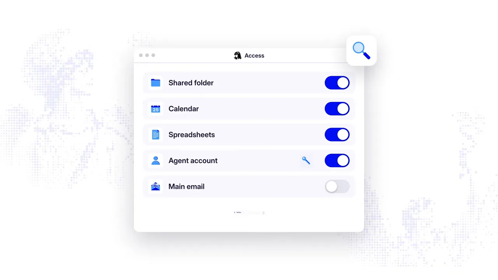
파일도 줄 수 있어요. 앱에선 PDF(Portable Document Format), 스프레드시트, 스크린샷을 채팅에 끌어다 놓고, 텔레그램에선 문서나 사진을 보내요. 영상은 AI 인덱스 보고서 PDF를 넣고 "요약하고 내가 신경 써야 할 숫자 세 개를 뽑아 줘", 이어서 "동료에게 보낼 짧은 문서로 만들어 줘"라고 해요. 마크다운 파일이 나오고 미리보기나 다운로드를 할 수 있어요.
구글 드라이브를 공유 폴더로
서버에 사는 에이전트에겐 약점이 하나 있어요. 만든 파일도 서버에 살아요. 텔레그램으로 주고받는 파일은 크기 제한도 있어요. 지금은 나와 에이전트가 파일 시스템을 공유하지 않는 거죠. 그래서 클라우드에 공유 폴더를 만들어 줘요. 구글 드라이브를 고른 건 많은 사람이 이미 쓰고, 같은 설정으로 캘린더와 스프레드시트도 함께 열리기 때문이에요. 이 둘은 레벨 5와 6에서 다시 써요.
발표자는 에이전트용 구글 계정을 따로 만들어 쓰고, 꼭 그러라고 해요. 내 진짜 계정에서 원하는 폴더만 그 계정에 공유하면, 에이전트는 내가 고른 것만 봐요. 새 세션에서 "Google Workspace 스킬을 설정해서 드라이브, 캘린더, 시트를 쓸 수 있게 해 줘"라고 하면 에이전트가 할 일을 하나씩 알려 줘요.
여기서 영상은 버그 하나를 숨기지 않아요. 원래는 Clarify라는 도구로 질문 창이 떠야 하는데, 질문이 끝없이 로딩만 됐어요. 발표자는 그 화면을 캡처해 "질문이 안 보여, 계속 로딩만 돼"라고 보냈고, 에이전트는 같은 질문을 평범한 글로 다시 물었어요. 문제가 생기면 화면을 찍어 에이전트에게 보내면 스스로 고치는 걸 도와준다는 게 요점이에요. 에이전트는 Drive, Calendar, Sheets에 Docs를 더하고, Gmail과 연락처도 넣을지 물었어요. 발표자는 시연을 위해 넣었지만, Gmail은 편할 때만 넣으라고 해요.
이후 과정은 아래 순서예요. 가장 지루한 부분이지만 한 번만 하면 된다고 해요.
- Google Cloud에서 새 프로젝트를 만들어요 — 이름은 Hermes Agent로 했어요. 에이전트가 준 링크를 평소 쓰는 브라우저에 붙여 열어도 돼요. 상단 표시줄에 Google Cloud 옆으로 프로젝트 이름이 떠요
- APIs & Services에서 필요한 API를 하나씩 켜요 — Google Drive API, Gmail API, Google Calendar API, Google Docs API, Google Sheets API, Google People API(연락처의 최신판)예요. API 페이지 위쪽 버튼이 'Disable API'로 바뀌면 켜진 거예요
- OAuth 동의 화면을 설정해요 — 앱 이름은 Hermes, 지원 이메일은 내 메일, 대상(Audience)은 External을 골라요.
- Credentials → Create credentials → OAuth client ID를 만들어요 — 애플리케이션 유형은 Desktop app이에요. client ID와 client secret은 남에게 보여 주면 안 돼요. JSON 파일을 내려받아 허미스 채팅창에 끌어다 놓아요
- Audience 페이지에서 나를 테스트 사용자로 추가해요 — 앱이 Testing 상태라 필요해요.
- JSON을 보내면 에이전트가 인증 URL을 줘요 — 외부 브라우저에서 에이전트용 계정으로 로그인해요.
로그인하면 아래 경고가 떠요. "Google hasn't verified this app"이에요. 겁낼 필요 없어요. 지금 만든 앱의 개발자가 바로 나라서 생기는 화면이에요. Continue를 눌러요.

다음 화면은 "Hermes wants access to your Google Account"예요. 맨 위 Select all을 누르면 아래 항목이 모두 체크돼요. 메일 읽기와 보내기, 드라이브 파일, 연락처, 문서, 시트, 캘린더 권한이 줄지어 있어요. 모두 내가 앞서 에이전트에게 쓰겠다고 한 것들이에요.
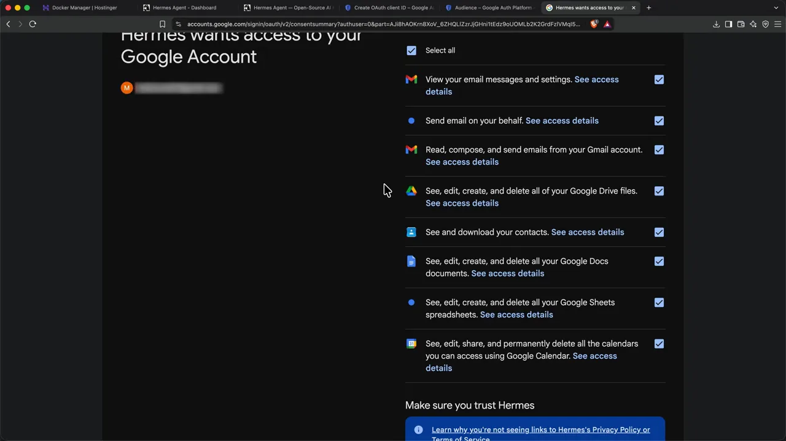
몇 분 뒤 에이전트가 아래 같은 확인 보고를 줘요. "Setup is complete and verified against live Google APIs"라는 줄 아래 표가 핵심이에요. Drive는 실제 파일 목록을, Sheets는 실제 셀 데이터를 읽었고, Calendar는 캘린더 두 개를 봤고, Gmail은 권한만 받고 아직 쓰지 않았다고 적혀 있어요. 초록 체크만 띄운 게 아니라 진짜 호출로 확인한 거예요.
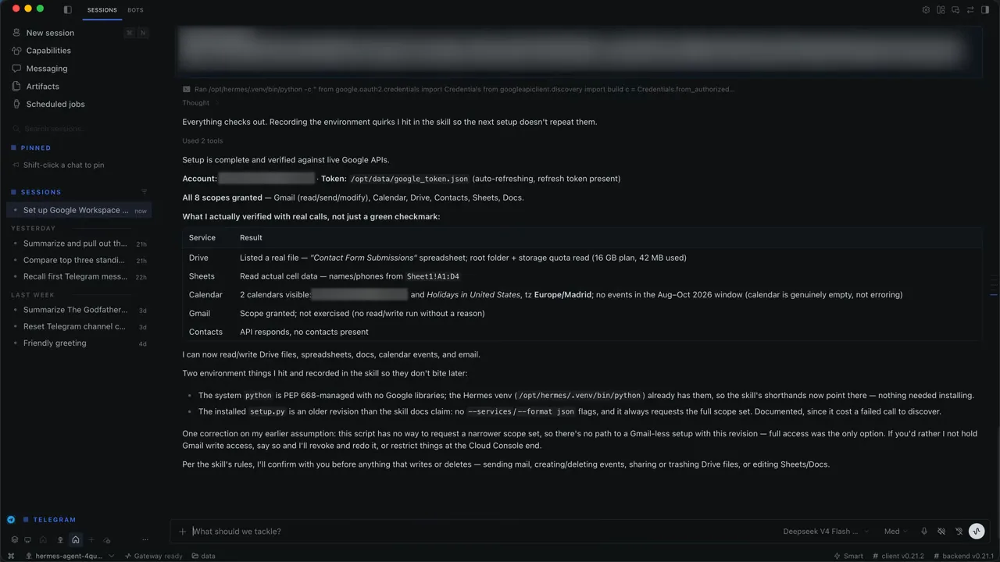
막혔다면 앞서처럼 막힌 화면을 찍어 무엇이 보이는지, 어떤 오류가 뜨는지 설명해 보내요. 허미스가 답을 못 하면 ChatGPT나 Claude 같은 다른 챗봇에 물어봐도 된다고 해요.
Inbox와 Outbox로 파일 주고받기
연결이 끝나면 "드라이브에 Hermes 폴더를 만들고 안에 Inbox와 Outbox를 넣은 뒤 링크를 줘"라고 해요. 앞서 만든 AI 인덱스 요약 대화로 돌아가 "그 요약을 문서로 저장해서 Outbox에 올리고, 휴대폰에서 열리는 링크를 줘"라고 하면, 링크가 있는 사람은 볼 수 있게 공유된 구글 문서로 올라가요.
반대 방향도 해 봐요. Inbox에 'State of AI in 2026' 문서를 올리고, 드라이브라는 말 없이 "Inbox 폴더의 최신 파일을 가져와서 다섯 줄로 요약해 줘"라고만 해요. 아래 화면처럼 Inbox의 최신 파일을 찾아 굵은 제목이 달린 다섯 개 항목으로 요약했어요. 화면 맨 아래 작은 줄에는 'Self-improvement review'가 보여요.
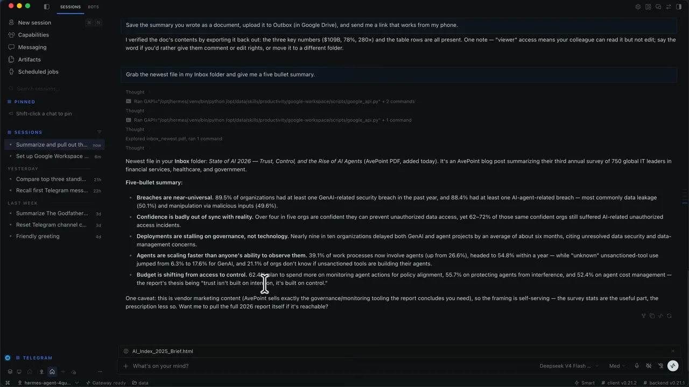
정리하면 에이전트가 읽을 건 Inbox에, 에이전트가 만든 건 Outbox에 링크와 함께 쌓이고, 어느 기기에서나 열려요. 두 폴더는 출발점일 뿐이에요. 에이전트가 무엇을 만드는지 보고 나면 내 일에 맞는 폴더로 바꾸고, 생각날 때나 일정에 맞춰 정리도 시키라고 해요.
메일은 보낼까요?
댓글에서 자주 나온 질문이에요. 에이전트가 메일에 닿으면 마음대로 보내기 시작할까요. 에이전트는 시킨 일을 해요. 보내라고 하면 보내요. 그러니 통제는 내가 주는 규칙에서 나와요. 발표자가 예약 작업에 쓰는 규칙은 이래요. "초안만 쓰고, 절대 보내지 말고, 다 되면 알려 줘." 아래 화면이 그 상태예요. 받는 사람과 제목, 본문이 채워진 초안이고, 파란 Send 버튼은 내가 누를 몫이에요.
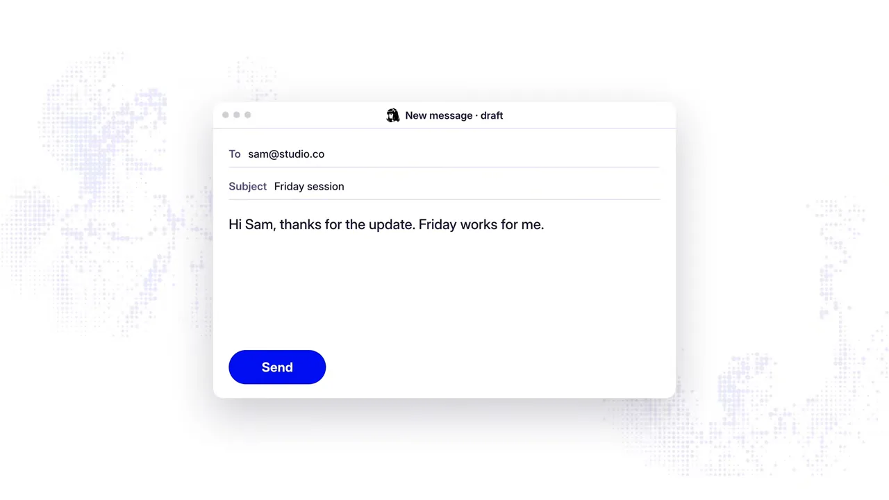
넘기는 순서도 정해 줘요. 아래 그림처럼 몇 주는 읽고 정리하게만 해요. 분류하고, 라벨을 붙이고, 내가 봐야 할 걸 뽑아내는 일이에요. 그다음 초안을 쓰게 하고, 스스로 보내기는 마지막이에요. 그 단계까지 갈 필요가 없을 수도 있어요.
MCP로 다른 앱 연결하기
구글은 연결할 수 있는 도구의 한 예일 뿐이에요. 발표자는 내가 가장 오래 머무는 도구 하나를 다음으로 연결하라고 해요. 많은 도구가 이제 MCP(Model Context Protocol)라는 표준을 쓰는데, 에이전트가 그 도구 안을 읽고 일하게 해 주는 플러그 같은 거예요. 데스크톱 앱 왼쪽 Capabilities를 열면 Skills, Tools, MCP, Plugins 탭이 있어요. 아래 화면이 MCP 탭이고, 미리 만들어진 연결 목록에 Airtable, Amplitude, Asana, Atlassian, Canva 같은 이름이 알파벳 순으로 있어요.
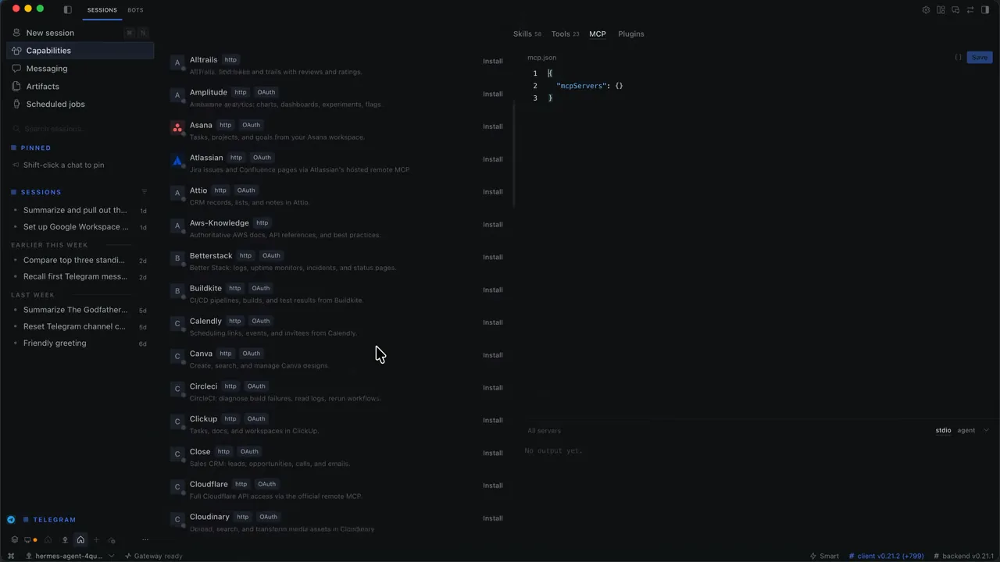
내게 맞는 MCP 연결은 Notion, GitHub, 고객 데이터베이스, 회계 프로그램일 수도 있어요. 아래 그림의 위 줄이 그 예시이고, 아래 줄 번호가 연결 순서예요. 1번 플러그로 연결하고, 2번 자물쇠로 무엇을 만질 수 있는지 정하고, 3번 목록처럼 그 도구 안에서 할 일을 줘요.
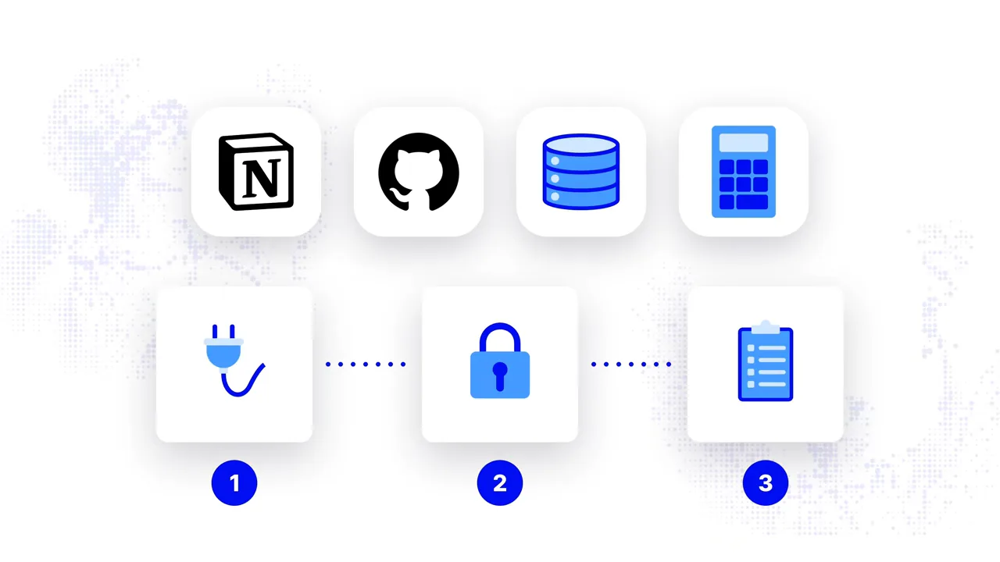
마지막 예시는 이미 연결한 구글 안에서 일 하나를 시키는 거예요. 새 세션에서 "다음 주 캘린더를 보고 가장 한가한 오후에 'change studio light bulbs'라는 30분 일정을 넣어 줘"라고 해요. 발표자는 실행 전 캘린더를 보여 주며 금요일 자리를 찾을 거라 예상해요. 아래 화면에서 25일 금요일 열 오후에 새 파란 일정이 들어간 게 보여요.
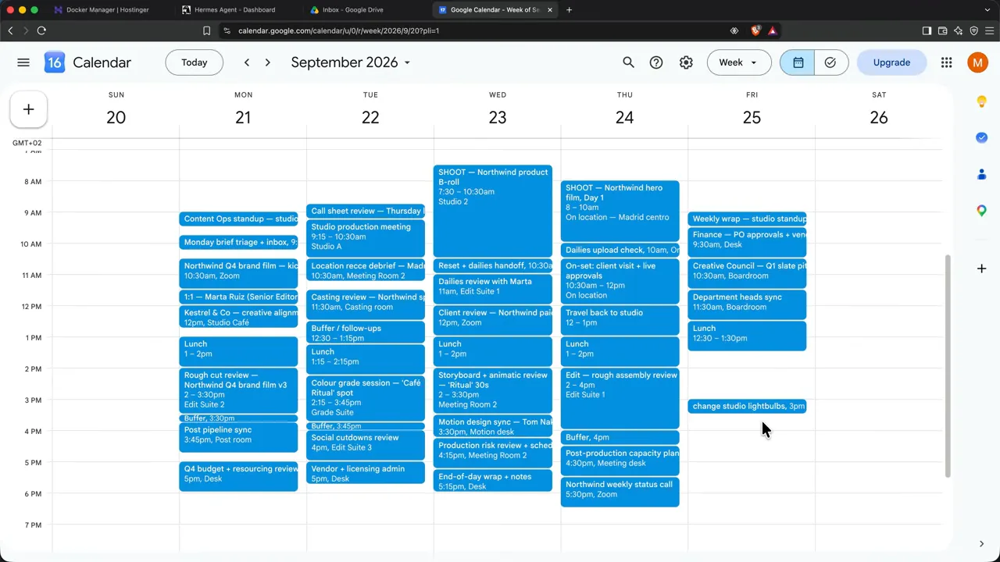
레벨 4 — 한 번 고쳐 주면 계속 기억해요
AI를 쓰다 보면 이런 경험이 있어요. 고쳐 주면 그 답만 고치고, 다음 세션에선 벌써 잊어서 또 고쳐 줘야 해요. 레벨 4는 같은 말을 반복하지 않게 하는 단계예요.
한 번 고친 취향이 새 세션에도 남아요
발표자는 "초보자를 위한 스튜디오 조명 글을 짧게 써 줘"라고 시켜요. 제목과 글머리표가 붙은 장황한 글이 나와요. 그래서 이렇게 고쳐요. "너무 장황해. 나는 짧고 힘 있는 문장이 좋아. 최대 세 문단, 제목이나 글머리표 없이. 이걸 선호로 저장해." 에이전트는 메모리에 저장했다고 답하고 훨씬 나은 글을 다시 써요. 설정 페이지를 찾을 필요 없이 신입에게 말하듯 말한 것뿐이에요.
같은 세션에서 마이크 글을 시키면 같은 모양이 나와요. 진짜 확인은 그다음이에요. Command+N으로 새 세션을 열고 "커피 로스팅에 대한 짧은 글"을 시켜요. 아무것도 이어지지 않은 새 세션인데도 같은 구조로 나와요. 어떤 챗봇이든 한 대화 안에선 취향을 지켜요. 그 대화를 다시 읽으니까요. 허미스는 이걸 모든 대화, 모든 기기에서 지켜요.
모델은 기억하지 못하고, 노트를 읽어요
여기서 발표자가 원리를 설명해요. AI 모델은 메시지 사이에 아무것도 기억하지 못해요. 메시지를 보낼 때마다 새 브리핑을 읽을 뿐이에요. 자기가 누구인지, 나에 대해 무엇을 아는지, 자기 메모, 그리고 지금까지의 대화예요. 기억상실증이 있지만 노트를 아주 잘 쓰는 유능한 비서를 떠올려 보래요. 매일 아침 나를 모르는 채 출근해서 노트를 읽고, 어제 일한 것처럼 일을 시작하는 비서예요. 그 노트가 메모리예요.
데스크톱 앱에서 메모리 설정은 설정(Command+,) → Memory & Context에 있어요. 아래 화면 맨 위 두 토글이 발표자가 짚는 두 가지예요. Persistent Memory(앞으로의 세션을 위해 오래갈 기억을 저장)와 User Profile(사용자 취향을 짧게 정리)이에요. 그 아래 Memory Budget 2200, Profile Budget 1375가 각 노트의 크기 한도예요.
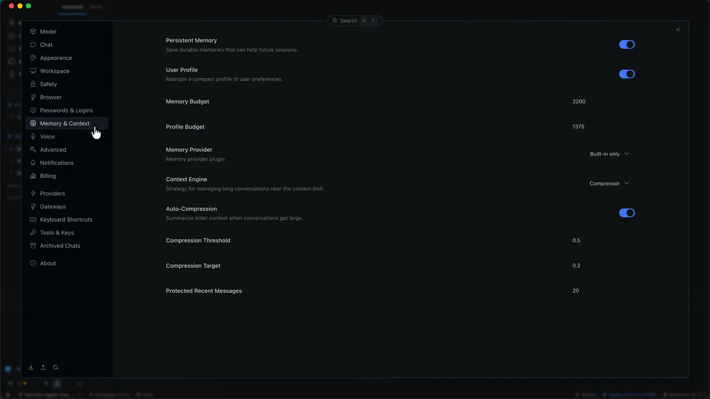
실제 파일은 웹 대시보드 Files의 memories 폴더에 있어요. MEMORY.md와 USER.md를 내려받아 텍스트 편집기로 열면 아래처럼 원문이 보여요. 지금까지 기억한 것 중엔 구글 워크스페이스 계정이 있다는 사실, 그 계정의 이메일, 쓸 수 있는 도구가 있어요. 허미스가 돌아가는 도커 환경에 대한 메모와, 사용자가 드라이브의 Inbox·Outbox로 파일을 주고받는다는 줄도 보여요.
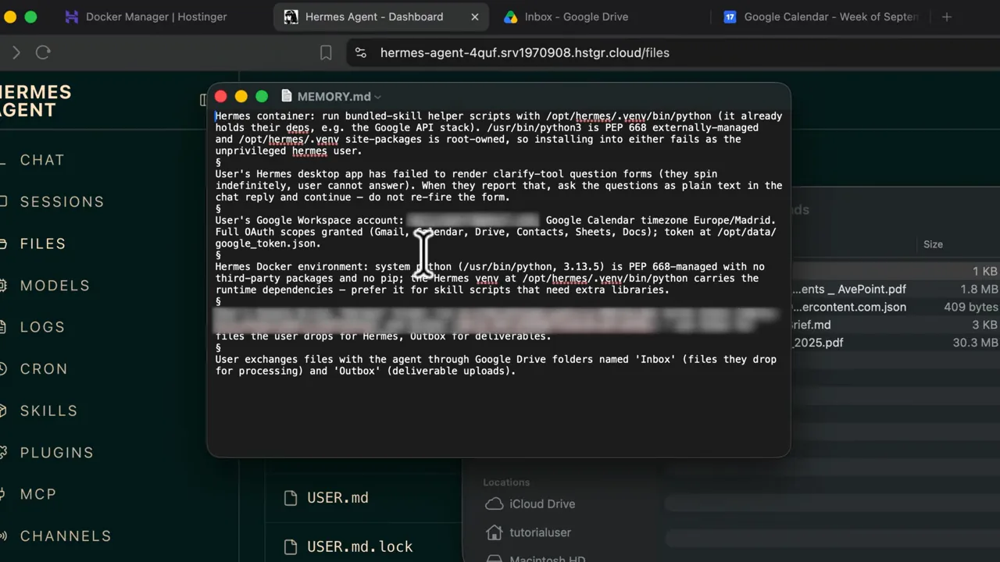
두 노트의 역할은 달라요. USER.md는 나에 대한 노트예요. 이름, 글 취향, 기대하는 것이 들어가고, 아까 고친 글쓰기 취향도 여기로 갔어요. MEMORY.md는 에이전트의 업무 노트예요. 내 환경에 대해 배운 것, 내가 쓰는 규칙, 한 번 틀리고 고친 것이 들어가요. 둘 다 에이전트가 쓰고, 나는 읽고 고쳐 달라고 할 수 있어요.
노트가 차면 인덱스를 둬요
두 노트는 일부러 짧아요. 각각 몇백 단어 정도예요. 모든 단어가 메시지마다 함께 가니까요. 아래 그림의 user.md 230단어, memory.md 340단어가 그 크기예요. 그 밖의 것은 두 곳에서 찾아요. 지금까지 나눈 모든 대화를 검색하거나, 저장된 파일과 스킬을 읽어요. 그림 아래쪽 conversations/와 files/ 폴더가 그 자리예요.
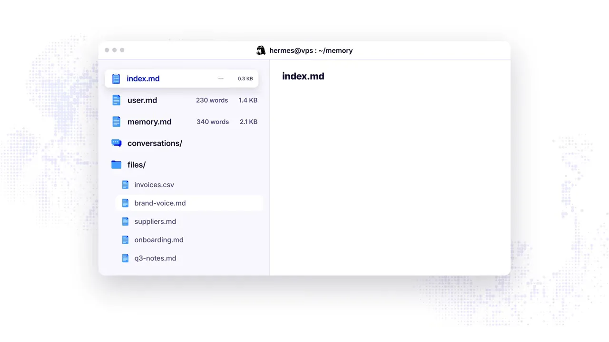
인덱스는 프롬프트 하나로 만들어요. "앞으로 노트의 인덱스 파일을 유지해 줘. 주제마다 어디 있는지 가리키는 목차야. 그리고 메모리에 그 파일을 가리키는 한 줄을 넣어 줘." 에이전트는 인덱스를 만들고 메모리에 포인터를 더해요. "인덱스 파일 보여 줘"라고 하면 아래처럼 내용을 보여 줘요. "# Hermes Notes Index" 아래에 Memory store, Skills by category 같은 절이 있어요.
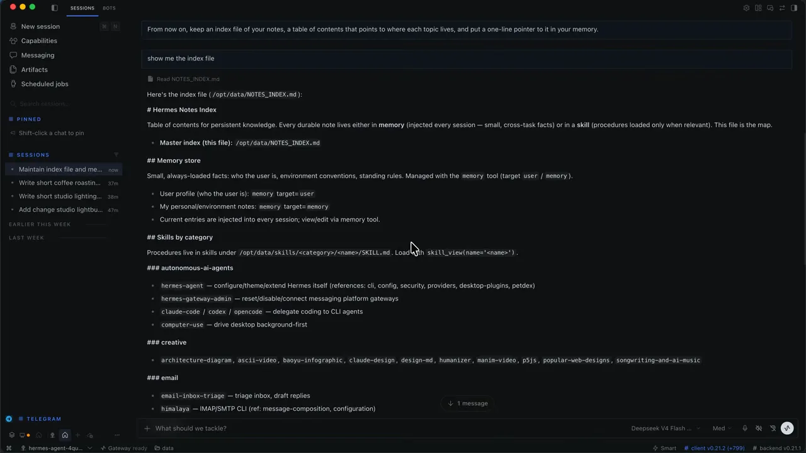
메모리는 사실, 스킬은 절차
메모리가 사실과 취향을 담는다면, 스킬은 절차를 담아요. 스킬은 레시피 같아요. 한 가지 일을 하는 단계를 적은 목록이고, 그 일이 생길 때만 읽어요. 발표자는 아까의 글쓰기 대화로 돌아가 "이 편집 방식을 concise-writer라는 스킬로 저장해 줘"라고 해요. 에이전트는 두 글에 적용한 고쳐 쓰기 과정을 스킬로 옮기고 파일 위치를 알려 줘요.
Capabilities의 Skills 목록에서 알파벳 순으로 내려가면 concise-writer가 있어요. 내가 배우라고 한 스킬이나 에이전트가 스스로 배운 스킬엔 Learned 표시가 붙고, 표시가 없는 건 기본 내장 스킬이에요. 눌러서 열면 아래처럼 스킬 전문이 보여요. 결국 스킬은 그냥 텍스트 파일이에요.

에이전트는 스킬을 맹목적으로 따르지 않아요. 아래 그림은 매주 공급업체 가격 페이지를 확인하는 'Price watch' 스킬이에요. 어느 주에 업체가 사이트를 바꿔 옛 단계로 가격을 못 찾게 됐다고 해 봐요. 매주 실패하는 대신, 허미스가 새 경로를 찾아 자기 단계를 다시 써요. 다음 실행은 그냥 돌아가요.
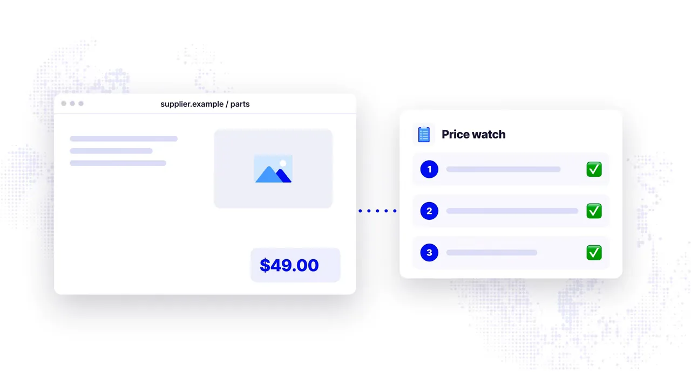
문서, 웹페이지, PDF도 스킬로 바꿀 수 있어요. 발표자는 구글의 SEO(Search Engine Optimization) 입문 가이드 PDF를 채팅에 끌어다 놓고 /learn을 친 뒤 "이 PDF를 재사용할 스킬로 바꿔 줘"라고만 해요. 파일이 없으면 링크를 줘도 돼요. 몇 분 뒤 아래처럼 "Skill created and verified"와 함께 google-seo-starter 스킬이 생겨요.
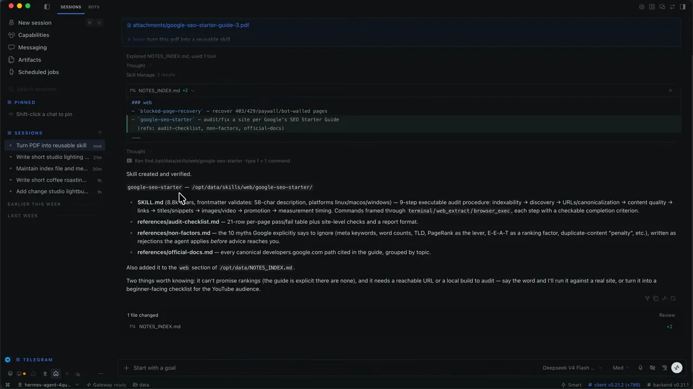
스킬을 다 직접 만들 필요는 없어요. Skills 페이지 아래쪽엔 설치할 수 있는 스킬이 있고, 맨 아래 'Skills Hub'를 누르면 남이 쓴 스킬 라이브러리가 열려요. 아래 화면 가운데 Skills Hub 창이에요.
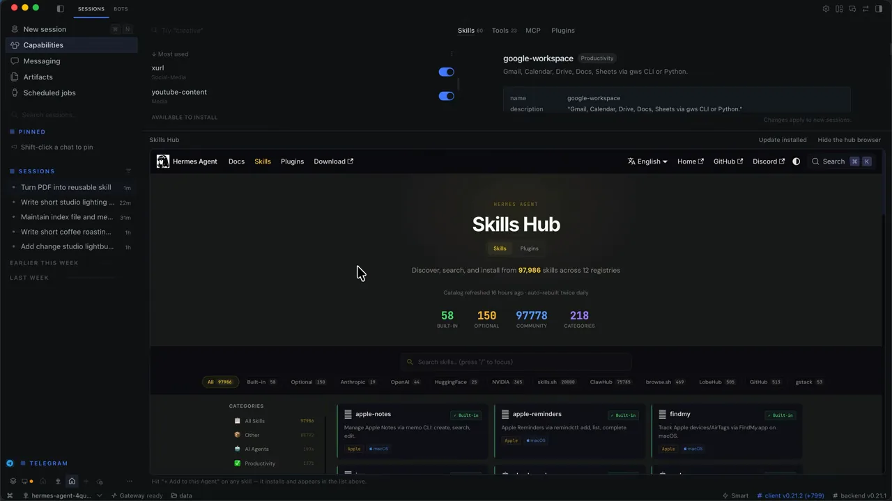
성격은 SOUL.md에
재미있는 기능부터 봐요. 아무 채팅에서 /personality를 치면 아래처럼 목록이 떠요. helpful, concise, creative, teacher 같은 것부터 catgirl, pirate까지 있어요. pirate을 고르고 태양에 대한 짧은 글을 시키면 해적 말투로 써요.
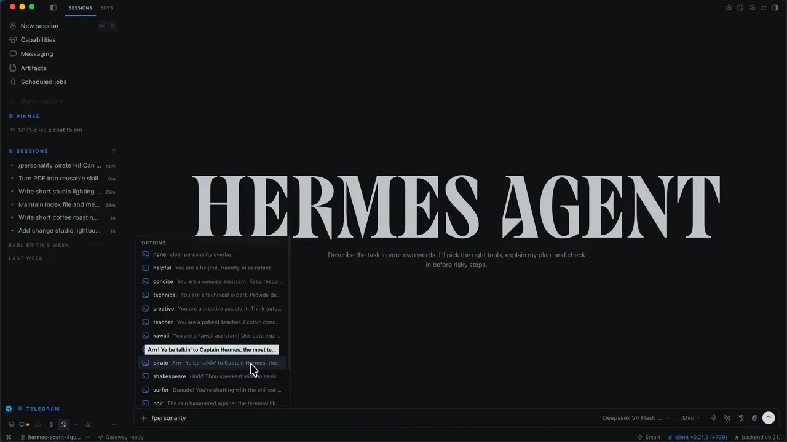
영구적인 성격은 SOUL.md라는 파일에 있어요. 에이전트가 누구이고 어떻게 행동하는지 담아요. 메모리가 나와 내 일에 대해 배운 것이라면, SOUL.md는 그 일에 가져오는 성격이에요. 짧게 유지하고, 말로 부탁해서 고쳐요. 발표자는 "항상 차분하고 직설적인 말투로 답해. 내가 선택지를 묻지 않았으면 질문으로 끝내지 마"라고 SOUL.md를 고치게 해요. 아래 화면 아래쪽에 Updated /opt/data/SOUL.md가 보여요.
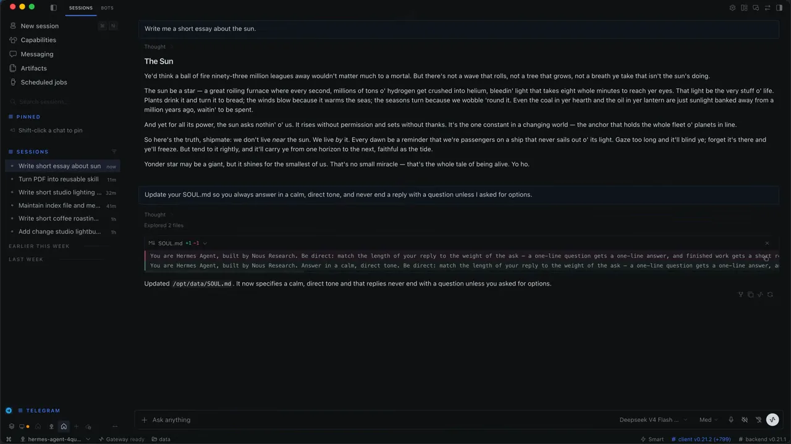
레벨 4에서 다룬 세 가지를 나란히 놓으면 이래요.
| 무엇에 | 담기는 것 | 어떻게 바꾸나요 |
|---|---|---|
메모리(USER.md·MEMORY.md) | 나에 대한 사실과 취향, 에이전트가 배운 환경과 규칙 | 고쳐 주면서 "선호로 저장해"라고 말해요 |
| 스킬 | 한 가지 일을 하는 단계별 절차 | "이 방식을 스킬로 저장해", /learn + 문서, Skills Hub |
SOUL.md | 에이전트의 성격과 말투 | "SOUL.md를 이렇게 고쳐"라고 부탁해요. 임시로는 /personality |
레벨 4의 숙제는 가장 거슬리는 것 하나를 고르는 거예요. 자꾸 틀리는 걸 고쳐 주거나, 꼭 기억할 나에 대한 사실 하나를 말하거나, 남에게 설명하기 지친 문서를 /learn으로 스킬로 바꿔요. 1분 가르치면 다시 반복할 일이 없다고 해요.
레벨 5 — 매주 하던 잡일을 넘겨요
레벨 5는 내가 자리를 비운 사이에 에이전트가 일하게 하는 단계예요. 허미스에는 미리 만들어진 자동화가 16개 들어 있고, 발표자는 전부 써 봤다고 해요. 아래 화면 오른쪽 Inbox 창이 그 결과를 요약한 거예요. Morning brief, News digest, Weekly review처럼 모두 나에게 읽을거리를 보내요.
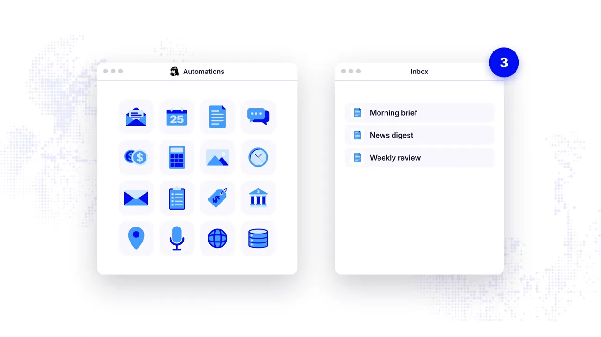
영수증 정리 담당을 만들어요
그래서 읽을거리가 아니라 진짜 잡일을 넘겨요. 매주 하면서 싫어하는 일이요. 발표자에겐 영수증 정리예요. 메일로 오는 구매 확인과 청구서를 결국 스프레드시트에 옮겨야 하는데, 일주일에 20분 드는 순수한 행정 업무예요. 이 일은 레벨 3에서 만든 에이전트 전용 구글 계정에서 돌아서 개인 받은편지함은 건드리지 않아요. 긴 프롬프트 하나로 넘겨요. 요지는 이래요.
- Expenses라는 구글 시트에 Receipts 탭이 없으면 만들어요.
- 매일 7시에 Gmail에서 지난 이틀 동안 온 구매 영수증, 주문 확인, 청구서 중 아직 Files 라벨이 없는 걸 찾아요.
- 각각 업체, 날짜, 총액, 통화를 뽑아 날짜·업체·금액·통화·분류·메일 ID 열에 한 줄씩 더하고, 메일엔 Files 라벨을 붙여요.
- 미리 승인한 반복 작업이니 매번 묻지 말되, 보내기·답장·전달·삭제·보관은 절대 하지 말아요. 읽고 라벨만 붙여요.
- 끝나면 텔레그램으로 몇 건을 정리했는지와 이번 달 누적 합계를 한 줄로 보내고, 어느 기기에서나 열리는 시트 링크를 줘요.
- 작업은 멈춘 상태로 만들어서 켜기 전에 내가 볼 수 있게 해요.
발표자는 이 프롬프트에서 실제로 일하는 부분이 세 군데라고 짚어요. 아래 화면은 그 첫 번째를 강조한 장면이에요. 프롬프트 안의 "read and label only" 부분이 파란색으로 표시돼 있어요.
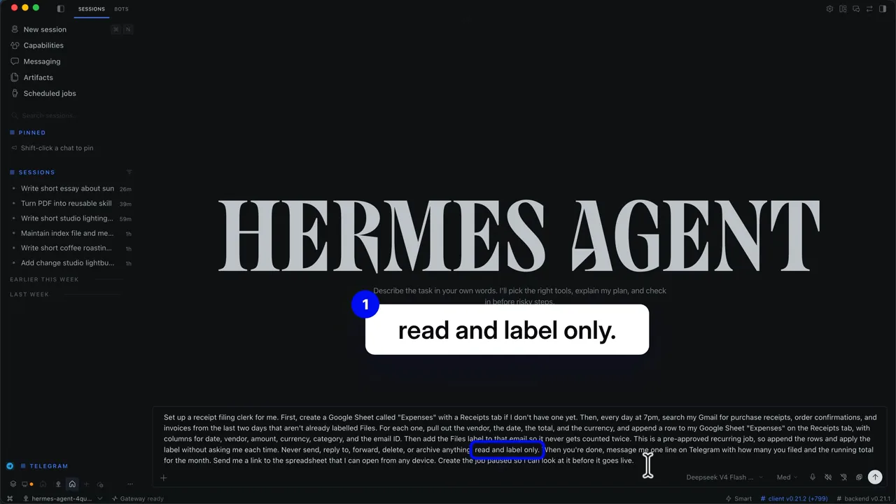
세 부분을 표로 정리하면 이래요.
| 프롬프트 문구 | 하는 일 | 막는 사고 |
|---|---|---|
| 읽고 라벨만(read and label only) | 못 하는 일을 적어 둬요. 남는 건 시트에 줄 더하기와 라벨 붙이기뿐이에요 | 최악의 결과가 시트의 잘못된 한 줄이 돼요. 지우면 그만이에요 |
| Files 라벨 | 이미 처리한 메일을 표시해요 | 두 번 돌아도 같은 영수증이 두 번 들어가지 않아요 |
| 멈춘 상태로 만들기 | 작업을 만들되 켜지 않아요 | 내가 읽어 보기 전에 돌기 시작하지 않아요. 레벨 3의 점진적 신뢰예요 |
두 번째 라벨에는 이유가 하나 더 있어요. 예약 작업은 매번 지난번 실행을 전혀 기억하지 못한 채 시작해요. 그래서 이런 작업엔 확인할 표시가 바깥 세상에 있어야 해요. 메일에 붙은 라벨이 그 역할을 해요.
보내고 나면 에이전트가 일해요. 실제로는 10분 반쯤 걸려 작업을 만들고, 처음부터 끝까지 한 번 시험해 보고 돌아왔어요. 시트를 열면 영수증이 줄지어 들어가 있고, 받은편지함 왼쪽 라벨에서 Files를 누르면 아래처럼 모든 영수증 메일에 Files 라벨이 붙어 있어요.
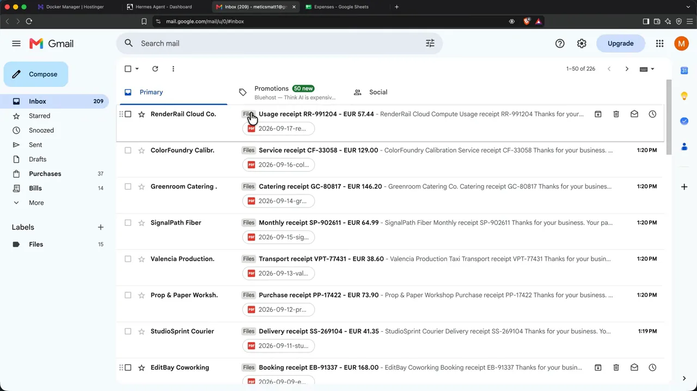
시험으로 한 번 돌렸을 뿐, 반복 작업은 아직 켜지지 않았어요. 데스크톱 앱 왼쪽 Scheduled jobs를 열면 아래 화면이에요. Receipt filing clerk 옆에 주황색 Paused 표시가 있고, 빈도는 every day at 7pm이에요. 아래 'PROMPT' 칸 첫머리에 "deterministic script job, no LLM"이라고 적혀 있어요.

Resume을 누르면 켜지고, Trigger now로 바로 한 번 돌려 볼 수 있어요. 영상에선 "이미 실행 중이거나 다른 스케줄러가 잡았다"는 오류가 났지만 작업은 어쨌든 돌았어요. 이런 오류가 가끔 나는데 괜찮다고 해요. 이제 매일 저녁 7시에 지난 이틀 치 메일을 훑어요.
내 한 주를 떠올려 보래요. 일정에 맞춰 하고, 규칙을 따르고, 파일·폴더·캘린더로 끝나는 일이면 좋은 후보예요. 아래 그림의 세 예시가 그거예요. 1번은 확인 메일로 스스로 갱신되는 기록표, 2번은 내일 회의(Standup) 앞에 자동으로 들어가는 15분 준비 시간, 3번은 그 주 노트가 미리 들어 있는 주간 폴더예요.
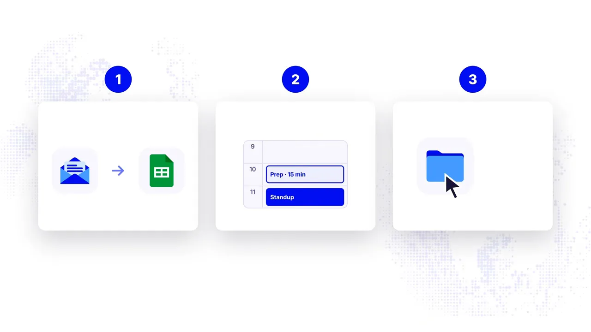
지켜보다가 새것만 알려 주는 작업
영수증 작업은 잡일을 했어요. 다음 작업은 무언가를 지켜보다가 이유가 있을 때만 나를 부르는 거예요. 새 세션에서 이렇게 말해요. "바르셀로나–런던 항공권 가격 추이를 지켜봐 줘. 확인용 스킬을 직접 만들고, 이미 보여 준 건 기록해 두고, 몇 시간마다 예약해서, 새로운 게 있을 때만 concise-writer 스킬로 써서 텔레그램으로 알려 줘."
이 작업은 30~45분쯤 걸렸어요. 영수증처럼 구체적인 절차를 주지 않았기 때문이에요. 에이전트는 실제 인터넷에서 가장 좋은 방법을 찾고, 장치를 만들고, 스킬을 쓰고, 일정에 올리고, 이미 보여 준 걸 기억할 메모리도 마련했어요. Scheduled jobs에는 아래처럼 Barcelona-London flight price watch가 생겼어요.
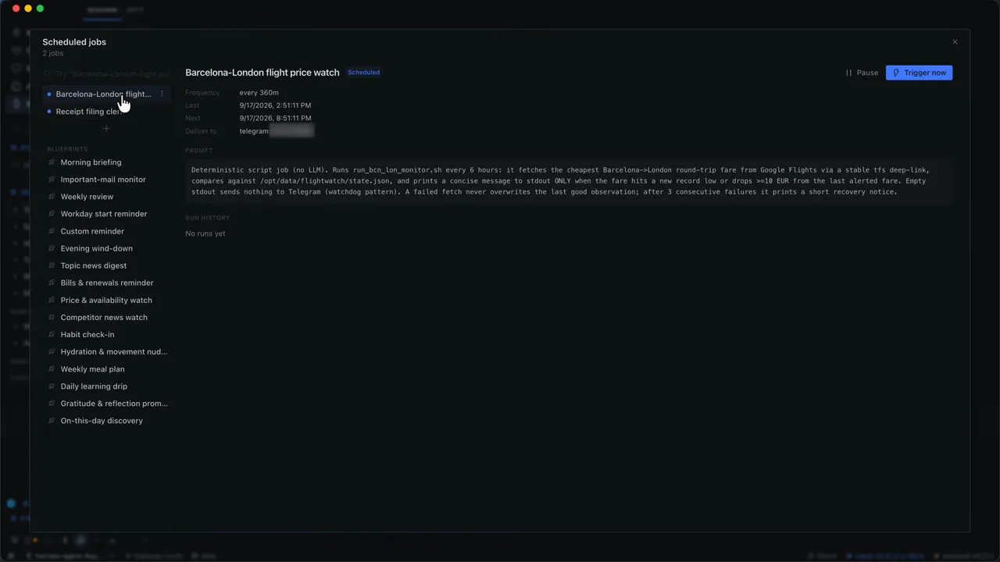
원하는 결과를 한 번 말했을 뿐인데, 이제 소식이 알아서 와요. 발표자의 에이전트는 이런 작업을 20개 넘게 돌려요. 매주 월요일 장부 점검, 생일을 챙기고 주문할 시간이 남았을 때 선물 아이디어 조사, 계획 중인 여행 견적을 하루 두 번 받아 최선안 보고, 진행 중인 협상 후속 연락 챙기기 같은 것들이에요.
작업마다 모델을 고르고 비용을 봐요
에이전트가 혼자 작업을 돌리기 시작하면 모델 선택이 중요해져요. 실행할 때마다 돈을 내니까요. 발표자는 모델을 일 단위로 고용하는 사람에 빗대요. 똑똑하고 비싼 사람도, 빠르고 싼 사람도 있고, 같은 사람도 노력 수준을 달리해서 일할 수 있어요. 아래 화면이 그 비유를 그린 거예요. Claude Opus 5는 $$$, GPT-6 Sol은 $$, Gemini Flash는 $이고, 아래에 Low, Medium, High 노력 수준이 있어요. 지금은 메일 작업에 가장 싼 Gemini Flash가 붙어 있어요.
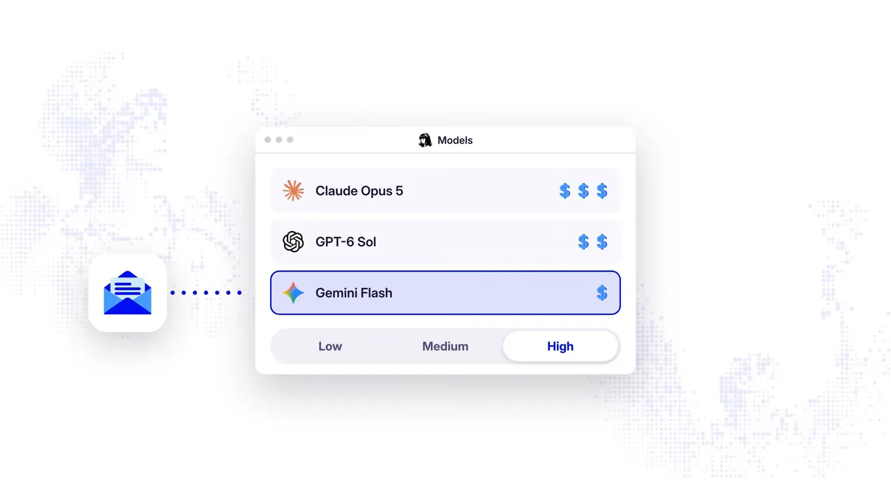
가격 차이를 숫자로 보기
Nous Portal 왼쪽 Resources → Models에는 할인 중인 모델(Active Promos)과 전체 모델 목록이 있어요. 발표자는 아래 전체 목록이 더 중요하다고 해요. 'PORTAL PRICE' 열이 실제로 내는 값이에요. 4번째 줄 DeepSeek V4 Flash는 백만 토큰당 입력 0.07달러, 출력 0.14달러예요. 10번째 줄 Anthropic Claude Fable 5.1은 입력 10달러, 출력 50달러예요. FREE 표시가 붙은 무료 모델도 보여요.

목록의 두 숫자를 같은 눈금으로 그리면 아래와 같아요. DeepSeek V4 Flash 막대는 너무 작아 거의 보이지 않아요.
어떤 일에 어떤 모델을 쓰나요
발표자의 기준은 이래요. 피드 확인이나 영수증 정리처럼 스킬을 따라 하는 반복 업무는 싼 모델로 충분해요. 다만 가장 싼 것과 무료 모델은 피하라고 해요. 추론을 못 하는 모델은 확신에 차서 실수하거든요. 엉뚱한 걸 정리하거나 남겨야 할 걸 버리는 식이에요. 계획, 분석, 틀리면 손해 보는 일처럼 판단이 필요한 일은 상위 모델이 맞아요. 허미스는 한꺼번에 많은 정보를 담을 수 있는 대표 모델에서 확연히 낫게 느껴진다고 해요. 그래서 허미스가 기대에 못 미치면, 도구를 탓하기 전에 더 강한 모델이나 높은 노력 수준부터 써 보래요.
데스크톱 앱에선 입력창 오른쪽 모델 선택기에서 모델을, 그 오른쪽 드롭다운에서 노력 수준을 바꿔요. Fable 5.1의 기본값은 Medium인데 대부분의 일엔 이걸로 충분하고, Ultra로 올리면 아주 비싸져요. 텔레그램에선 /model로 모델을, /reasoning으로 노력 수준을 골라요. 텔레그램에선 effort 대신 reasoning이라고 불러요.
직접 겪은 함정 두 가지
첫째, 모델은 대화 도중 언제든 바꿀 수 있어요. 하지만 긴 대화 도중 바꾸면 새 모델이 대화를 처음부터 다시 읽어서 더 비싸요. 큰일이면 새 모델로 새 스레드를 시작하래요.
둘째, 예약 작업은 만들 때의 모델을 기억해요. 아래 그림의 Cron jobs 카드에서 Model 줄의 GPT-6 Astra 옆 자물쇠가 그 뜻이에요. 나중에 기본 모델을 바꾸면, 특정 모델에 고정되지 않은 작업은 더 비싼 모델로 몰래 바뀌는 대신 실행을 거부해요. 일부러 그렇게 만든 거예요.
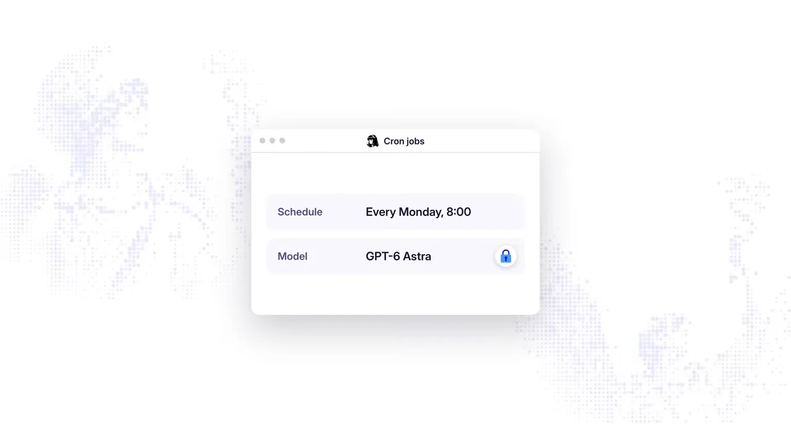
폴백 체인 걸기
모델은 가끔 멈추고, 요금제는 한도에 걸려요. 보통 내가 자는 사이 예약 작업이 돌 때요. 그래서 첫 모델이 답하지 않을 때 내려갈 짧은 모델 목록을 줘요. 아래 그림이 그 모양이에요. 1번 Claude Opus 5가 금지 표시와 함께 흐려졌고, 2번 GPT-6 Sol, 3번 Gemini Flash가 이어서 대기해요.
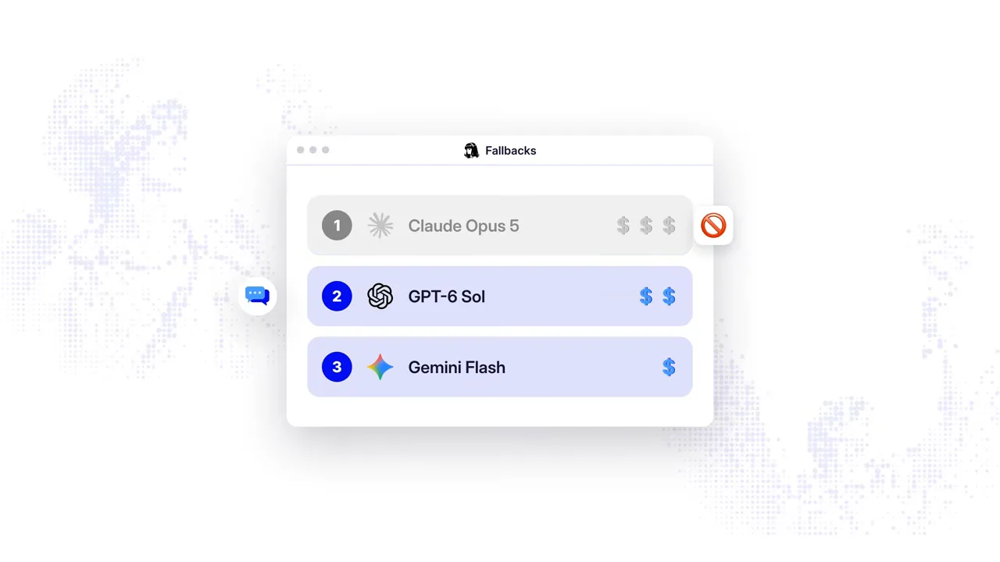
설정은 말로 해요. 발표자는 Nous Portal 목록에서 이름을 복사해 "폴백 체인을 설정해 줘. DeepSeek V4 Pro 0423을 먼저, 그다음 Claude Sonnet 5, 그다음 Upstage Solar Pro 4"라고 보내요. Sonnet 5는 더 비싸지만 늘 안정적으로 쓸 수 있어서, 마지막은 거의 무료인 걸 최후 수단으로 넣었어요. 아래 답에서 Primary와 Fallback 1~3 네 줄이 설정 결과예요.
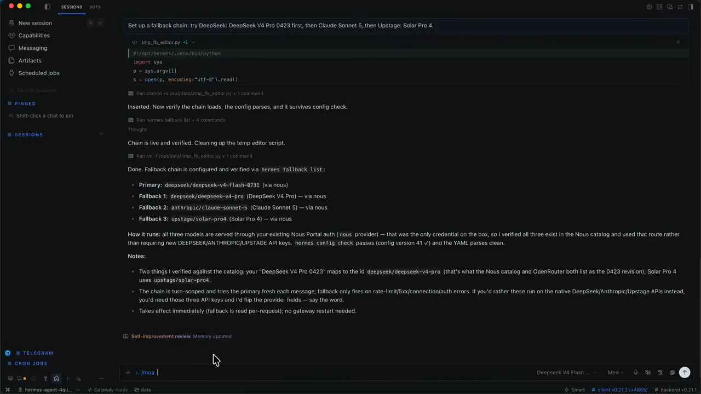
어려운 질문엔 /moa
MoA는 어려운 질문용 명령이에요. 요청 앞에 /moa를 붙이면 허미스가 여러 모델에 동시에 보내고, 각 답의 좋은 부분을 합쳐 하나의 답을 줘요. 답 여러 개 값을 내는 셈이니 두 번째, 세 번째 의견이 필요한 결정에만 쓰라고 해요.
flowchart LR Q["/moa 질문"] --> R1["참조 모델 1
Claude Opus 5"] Q --> R2["참조 모델 2
GPT-5.6 Luna"] Q --> R3["참조 모델 3
DeepSeek V4 Pro"] R1 --> A["애그리게이터
DeepSeek V4.1 Flash"] R2 --> A R3 --> A A --> F["최종 답 하나"]
처음 실행했을 땐 제공자 오류가 났어요. MoA용 모델이 설정되지 않았던 거예요. 오류와 함께 뜬 Switch provider 버튼을 누르면 모델 설정의 Mixture of Agents 칸이 열려요. 아래 화면처럼 Reference 1~3에 모델을 하나씩 넣어요. 영상은 Opus 5, GPT-5.6 Luna, DeepSeek V4 Pro를 골랐어요. 맨 아래 Aggregator는 답을 모아 정리하는 모델이라 실제로 쓸 수 있는 걸로 꼭 골라야 해요. 영상은 DeepSeek V4.1 Flash로 했어요.
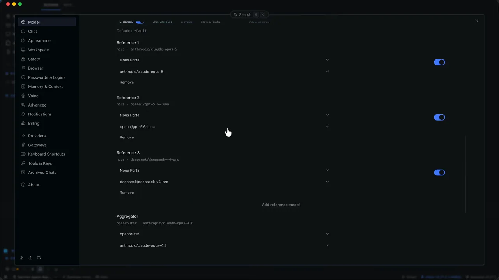
질문은 "이 모델들이 대표 → 안정 → 싸거나 무료 순의 폴백 체인으로 최선인지 간단히 벤치마크해 줘"였어요. 26분쯤 걸려 아래 답이 왔어요. 'Suggested chain' 아래 강조된 네 줄이 추천이에요. Claude Opus 5를 대표로, DeepSeek V4 Pro를 안정용으로, DeepSeek V4 Flash를 싼 유료로, Solar Pro 4 무료판을 최후 수단으로 두래요.
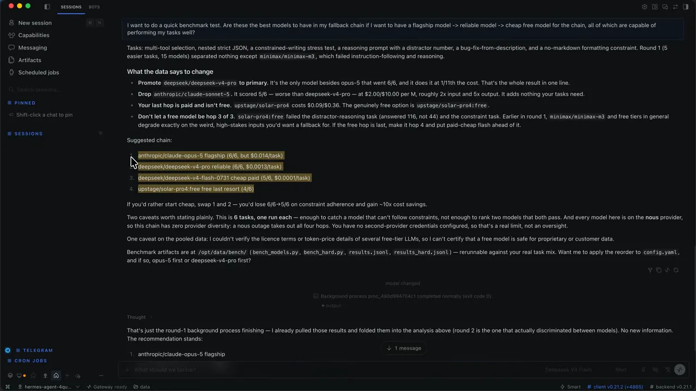
얼마나 들었나요
Nous Portal 왼쪽 Account → Usage에서 총 지출, 입력 토큰, 출력 토큰, 캐시 읽기·쓰기, 요청 수를 기간별로 볼 수 있어요. 입력 토큰은 내가 보낸 프롬프트, 출력 토큰은 모델이 낸 답이고, 둘 다 크레딧을 깎아요.
메시지를 보낼 때마다 에이전트는 브리핑 전체를 다시 보내요. 아래 그림의 네 칸이 그 내용이에요. 지침, 메모리, 도구 목록, 지금까지의 대화예요. 이렇게 다시 읽는 걸 컨텍스트라고 하고, 청구액의 거의 전부가 여기서 나와요.
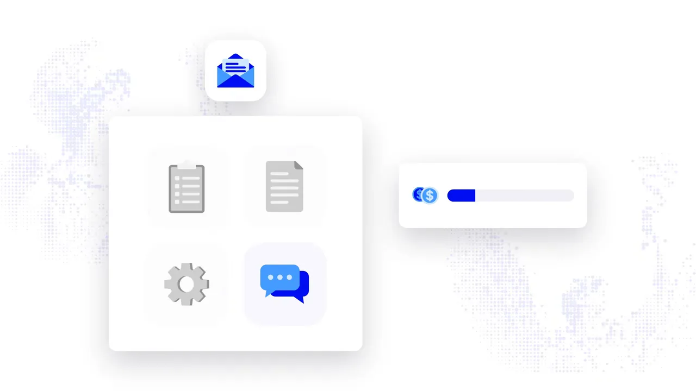
영상의 사용량 화면 숫자로 보면 캐싱의 효과가 보여요. 입력 토큰 2,420만 개 중 2,190만 개가 캐시 읽기였어요.
서버 요금은 Hostinger에서 고정이라 신경 쓸 건 모델 요금이에요. 발표자는 며칠에 걸쳐 촬영했는데, 첫날은 8센트 남짓이었어요. 아래 화면은 MoA를 돌린 날의 막대에 마우스를 올린 모습이에요. 맨 위 anthropic 줄이 1.30달러로, 그날 합계 1.83달러의 대부분이에요. 그 앞 며칠의 작은 막대들은 DeepSeek V4 Flash만 쓴 날이에요.

레벨 5의 숙제는 매주 하는 일 중 스프레드시트, 폴더, 캘린더로 끝나는 일 하나를 넘기는 거예요. 멈춘 상태로 만들고, 에이전트가 쓴 걸 읽고, 그다음 켜요.
레벨 6 — 에이전트 팀과 칸반 보드
가장 간단한 팀: 서브에이전트
가장 간단한 팀은 설정이 필요 없어요. 에이전트에게 일을 나누라고 하면, 동시에 일하는 도우미를 띄우고 답을 하나로 모아 줘요. 발표자는 이렇게 말해요. "11월 5일 런던에서 출발하는 리스본 3일 여행을 짜 줘. 서브에이전트 하나는 할 거리, 하나는 현지 음식 맛집, 하나는 항공편을 맡고, 합친 계획 하나를 줘." 대화 상대인 메인 에이전트가 세 서브에이전트에게 일을 넘기고, 셋은 각자 DeepSeek V4 Flash로 일해요. 서브에이전트마다 다른 모델을 쓰라고 할 수도 있어요.
세 조사원이 차례대로가 아니라 동시에 나가서 일하니 훨씬 빨라요. 몇 분 뒤 아래 같은 일정표가 와요. 맨 위 "Lisbon, 3 Days — Nov 5–8"아래로 추천 항공편, Day 1 역사 지구, Day 2 벨렝, Day 3 신트라 당일치기가 이어져요.
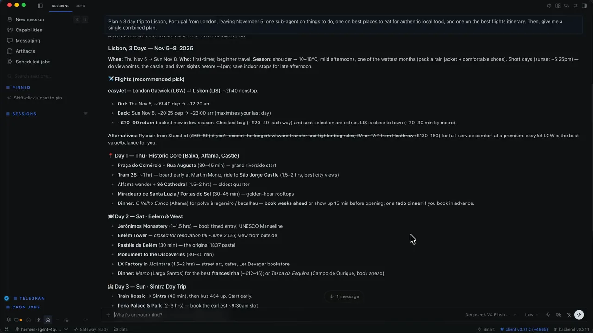
계속 있는 팀원: 프로필
상시 팀을 원하면 팀원을 만들어요. 허미스에선 팀원을 프로필이라고 불러요. 같은 서버에 있지만 자기 메모리, 자기 스킬, 자기 성격, 자기 모델을 가진 별도 에이전트예요. 데스크톱 앱은 프로필을 이름·직함·직무 설명·얼굴이 있는 봇으로 보여 줘요. 속은 같고, 만들기가 더 친근할 뿐이에요.
만들기 전에 발표자는 직무 설명부터 에이전트에게 쓰게 해요. 다음에 만들 보드가 무엇을 필요로 하는지 에이전트가 더 잘 알기 때문이에요. "프로젝트 보드용으로 researcher, writer, reviewer 세 팀원을 만들 거야. 보드가 설명만 보고 어떤 일이 누구 것인지 알 수 있게 한 문장짜리 직무 설명을 써 줘." 아래가 그 답이에요.
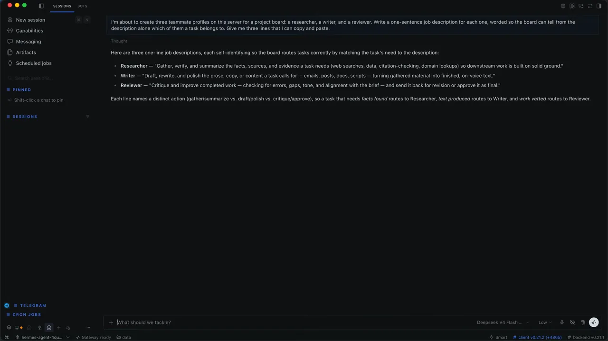
앱 왼쪽 위에서 Sessions 탭을 Bots로 바꾸고 + → New bot을 눌러요. 얼굴은 기본 모양, 설명으로 생성, 사진 업로드, 펫 중에 고를 수 있고, 발표자는 펭귄을 골랐어요. 이름과 직함에 researcher를 넣고 직무 설명을 붙여요. Advanced를 열지 않으면 기본 프로필을 그대로 복제해요. 발표자는 researcher가 늘 강한 모델을 쓰게 하려고 아래처럼 Provider를 Nous Portal로, Model을 anthropic/claude-opus-5로 바꿨어요.

SOUL.md 칸을 비우면 이름·직함·설명으로 성격을 자동 생성해요. 영상 1:29:10에서 보기writer와 reviewer도 같은 방법으로 만들고 일에 맞는 모델을 줘요. 잘 되는지 보려고 reviewer에게 "Hello"를 보내면 아래처럼 답해요. "지금은 검토할 게 없으니, 준비되면 보내 줘." 이미 자기 일을 알고 있어요.
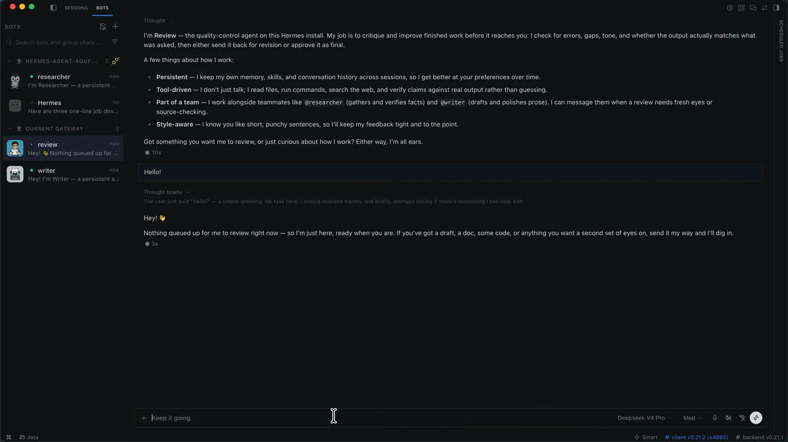
칸반 보드
허미스엔 Trello처럼 생긴 칸반이라는 프로젝트 보드가 있어요. 일이 왼쪽에서 오른쪽으로 지나가는 열이 있고, 일 하나가 카드 하나예요. 다른 점은 카드가 나를 기다리지 않는다는 거예요. 아래 그림처럼 Research, Budget, Invites 카드마다 사람 아이콘이 붙어 있죠. 일을 보드에 올리면 보드가 단계로 쪼개고, 단계마다 맞는 팀원에게 넘기고, 팀원들이 열을 따라 일해요. 내가 보든 자든 상관없어요.
빈 보드엔 열이 안 보여서 발표자는 빈 시험 카드를 하나 만들어 열을 보여 줘요. 열마다 뜻은 아래와 같아요.
발표자는 이 중 세 열은 보드가 직접 정해서 카드를 끌어 넣을 수 없다고 말하지만, 어느 셋인지는 짚지 않아요. 보드 위 안내 문구는 Running과 Review를 "에이전트의 차선이니 손대지 말라"고, Blocked는 "나를 기다리는 중"이라고 적어요. 그림의 점선은 이 문구를 따랐어요. 시험 카드를 만들자 보드가 바로 집어 Running 열로 옮겼어요.
카드가 조용히 멈추지 않게
발표자가 직접 실수하며 배운 점이 있어요. 보드는 뒤에서 조용히 돌아요. 좋아 보이지만, 카드가 내 답을 기다리며 멈춰도 아무도 알려 주지 않아요. 한 시간 뒤 돌아와서야 그동안 일이 멈춰 있었다는 걸 알게 되죠. 그래서 두 가지를 다 써요. 첫째, 카드를 앱의 New task 대신 텔레그램의 /kanban 명령으로 만들어요. 그렇게 만든 카드는 자동으로 구독돼서 끝나거나 막히면 메시지가 와요. 아래 그림이 그 흐름이에요. 휴대폰에서 "/kanban Plan the offsite"를 보내면 보드에 카드가 생기고, 종 아이콘이 알림을 뜻해요.
/kanban은 하위 명령이 많아 복잡해 보여요. 가장 중요한 건 create예요. 쓰는 법을 모르겠으면 에이전트에게 예시를 보여 달라고 하면 되고, 필수 인자는 제목 하나뿐이에요. 텔레그램 명령 목록엔 자주 쓰는 것만 떠서 /kanban이 목록에서 안 골라져도 괜찮아요. 컴퓨터에서 칠 땐 하이픈 두 개가 긴 대시 하나로 합쳐지는 문제가 있어서, "- -"로 띄워 쓴 뒤 공백을 지우는 요령도 알려 줘요.
/kanban create "TEST TASK" --assignee default보내면 아래처럼 카드가 만들어지고 구독됐다는 답이 와요. "Created t_…(ready, assignee=default)" 바로 아래 "subscribed — you'll be notified"가 보여요. 잠시 뒤 같은 대화에 완료 알림이 왔어요.

진짜 일 맡기기: 리스본 여행 전체
이번엔 데스크톱 앱에서 진짜 일을 올려요. 발표자가 실제로 에이전트에게 맡기는 일, 여행 준비 전체예요. 늘 미루는 '무엇을 예약했는지 기록하기'까지 포함해요. 앞의 서브에이전트 예시와 달리 어떻게 일할지는 말하지 않고, 누구에게 맡길지도 보드에 맡겨요. 아래 New task in Triage 창에 제목 "Lisbon Trip Plan"과 긴 설명을 넣어요.
발표자는 내 큰일을 떠올려 보래요. 정확히 어떤 결과물이 필요한지, 어떤 형식이 좋은지, 어떤 맥락이 필요한지 생각해서 다 적으라는 거예요. Create task를 누르면 카드가 Triage 열로 가고, 복잡한 일일수록 잠시 머물러요. 오케스트레이터 에이전트가 일을 작은 조각으로 쪼개 여러 에이전트에게 나누는 시간이에요. 몇 분 뒤 보드는 아래처럼 바뀌어요. 'TODO' 열엔 원래 카드와 예산 시트, 캘린더 임시 일정, 최종 검토 카드가 있고, 'RUNNING' 열에선 항공편, 동네, 당일치기 조사 세 카드가 동시에 돌아요.
카드를 열면 의존 관계가 보여요. 아래는 'Add placeholder calendar events' 카드예요. 오른쪽 'DEPENDENCIES'에 Blocked by 하나, Blocks 둘이 있어요. 이 카드는 앞 카드가 끝나야 시작하고, 이 카드가 끝나야 뒤의 두 카드가 시작해요. 메인 에이전트가 이걸 조율하며 카드를 파이프라인을 따라 옮겨요.
카드마다 자기 기록과 댓글이 있어요. 실행 중인 카드를 내려 보면 활동 로그에 지금 돌리는 명령이 실시간으로 쌓여요. 댓글란에 메모를 남기면 일하는 에이전트와 오케스트레이터가 읽고, 카드가 열 사이를 오갈 때 그들도 댓글을 남겨요. 발표자는 오케스트레이터 AI가 전문가들에게 일을 나눠 주는 작은 회사 같다고 해요.
답장을 기다려야 하는 카드
호텔이 메일로 답할 때까지 기다렸다가 이어 갈 수 있을까요. 가능해요. 끝낼 수 없는 팀원은 카드를 Blocked로 옮기고 이유를 댓글에 적어요. 다만 카드 하나는 실행되고 끝나는 작업이라 받은편지함을 지켜보며 앉아 있을 수 없어요. 그래서 두 번째 작업이 필요해요. 보드를 확인하는 예약 작업이에요.
flowchart LR B["Blocked 카드
막힌 이유를 댓글에"] --> C["예약 작업
30분마다 보드 확인"] C --> Q{"기다리던 게
도착했나요?"} Q -- "예" --> R["Ready로 되돌려
작업 재개"] Q -- "정말 내가 필요" --> T["텔레그램으로
나에게 메시지"]
발표자는 단순한 버전을 만들어요. 새 세션에 아래 프롬프트를 보내요. 매일 아침 리스본 여행 예약 확인 메일을 찾아, 시트의 실제 지불액을 채우고 예약 칸에 체크하고, 캘린더 임시 일정을 지우고 확인 번호가 든 진짜 일정을 만들고, 함께 가는 사람을 손님으로 넣고, 메일엔 Trip 라벨을 붙이고, 텔레그램으로 바뀐 걸 한 줄 보내고, 멈춘 상태로 만들라는 내용이에요.
같은 보드로 주간 보고서, 상품 설명 묶음, 콘텐츠 일정, 조사와 연락 목록 같은 일도 돌릴 수 있다고 해요.
관리와 다음 단계
이제 작은 시스템을 하나 가진 셈이라, 마지막으로 관리 두 가지를 짚어요. 뭔가 이상하면 레벨 2의 세 가지를 같은 순서로 봐요. 크레딧, 게이트웨이, 로그예요.
웹 대시보드 왼쪽 아래 System을 열면 설정 전체가 어떻게 도는지 한눈에 보여요. 아래로 내리면 게이트웨이 칸에서 멈추기, 재시작, 시작을 할 수 있어요. 더 내리면 아래 화면처럼 백업 칸이 있어요. 'FULL BACKUP'의 Create backup과 Download backup 버튼이 그거고, 그 아래 'RESTORE'에서 내려받은 백업 파일을 올려 되돌릴 수 있어요. 위쪽 Operations 줄엔 Run doctor, Security audit, Update skills 같은 관리 버튼도 있어요.
업데이트도 버튼 하나예요. 서버에서 도는 허미스(백엔드)는 Hostinger Docker Manager에서 애플리케이션 오른쪽 점 세 개 → Update로 올려요. 데스크톱 앱은 설정 → About에서 새 버전을 확인하고 Update now를 눌러요. 둘은 따로 업데이트된다는 걸 기억해 두래요. 레벨 2에서 본 "Backend out of date" 경고가 바로 둘의 버전이 어긋날 때 나와요.
배지로 보는 에이전트의 이력
마지막 페이지는 재미 삼아 보는 곳이에요. 웹 대시보드 Plugins 아래 Kanban 밑의 Achievements를 열면, 허미스가 에이전트가 한 모든 일을 읽고 배지를 줘요. 아래 화면 위쪽 숫자가 발표자의 기록이에요. 60개 중 7개 획득, 53개 발견, 최고 등급 Gold, 가장 최근 배지는 Model Sommelier예요.
여기까지 오면 가진 것
내 것인 서버에서 돌고, 휴대폰과 데스크톱에서 닿고, 내 파일과 계정에 연결돼 있고, 내가 일하는 방식을 배운 AI 에이전트예요. 매주 하던 잡일 하나를 대신하고, 에이전트 팀이 스스로 프로젝트를 처리하는 보드도 있어요.
발표자의 마지막 조언은 작게 시작하라는 거예요. 질문부터 하고, 진짜 일 하나를 주고, 내가 일하는 방식을 배우게 해요. 믿음이 생기면 한 달 내내 미뤄 온 일을 넘겨요.